Novogene 16S Amplicon QIIME2 Analysis Report
| Contract ID | X204SC00000000-Z01 |
| Contract Name | amplicon-WBI |
| Batch ID | X204SC00000000-Z01-F00X |
| Amplified Region | 16SV4 |
| Primer Seq | GTGCCAGCMGCCGCGGTAA,GGACTACHVGGGTWTCTAAT |
| Report Time | 2024-09-11 |
| Reminder | Partial results are presented in this report, while full results will be delivered in data release. Hyperlink of results in this report will be only valid in data release, after statement confirmation. If there are any doubts regarding the presentation of the final report's results or the file's location, please review the ReadMe.html file. |
1 Introduction
16S ribosomal RNA (rRNA) is a component of the 30S small subunit of the ribosome in prokaryotic cells, containing 9 hypervariable regions (V1-V9), ranging from about 30-100 base pairs long that are involved in the secondary structure of the small ribosomal subunit. The degree of conservation varies widely between hypervariable regions, with more conserved regions correlating to higher-rank taxonomy and less conserved regions to lower ranks, such as genus and species. Therefore, 16S rDNA can be used in reconstructing bacterial phylogenies and classifications.
Sequence variation in the amplicon gene is widely used to characterize diverse microbial communities. With the continuous development of high-throughput sequencing platforms, the illumina sequencing platform could be used for taxonomic classification. Amplicon sequencing technology gradually becomes an important method to study the composition and structure of the microbial communities.
Additionally, conservative regions enable the design of universal primers. Since 16S rDNA amplicon sequencing typically selects one or several hypervariable regions of interest, the universal primer used during PCR amplification is designed from the conservative regions that encompass the hypervariable regions of interest, which will allow for the identification of microorganisms from the hypervariable regions through subsequent analysis (Caporaso et al., 2011; Youssef et al., 2009; Hess et al., 2011).
In the process from DNA samples to final data, each step such as sample test, PCR, purification, library preparation, and sequencing will affect the quality and quantity of data, while the data quality will directly affect the subsequent information analysis results. In order to keep the accuracy and reliability of sequencing data, quality control (QC) is performed at each step of the procedure.
The workflow is shown as follows:
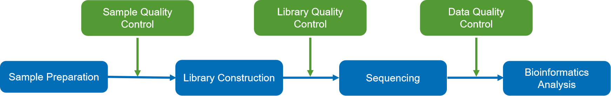
Figure 1.1 Project workflow
2 Library Construction and Sequencing
2.1 Sample Quality Control
Methods of sample quality control refer to QC report.
2.2 Library Construction, Quality Control, and Sequencing
PCR amplification of targeted regions was performed by using specific primers connecting with barcodes. The PCR products of proper size were selected through agarose gel electrophoresis. The same amount of PCR products from each sample was pooled, end-repaired, A-tailed, and further ligated with illumina adapters. Libraries were sequenced on a paired-end Illumina platform. The experimental procedures of DNA library preparation are shown in Figure 2.1.
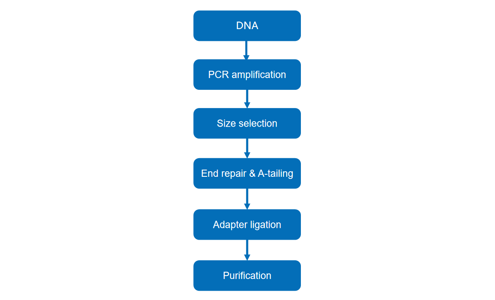
Figure 2.1 Workflow of library construction
The library was checked with Qubit and real-time PCR for quantification, while a bioanalyzer was used for size distribution detection. Quantified libraries were pooled and sequenced on Illumina platforms according to the effective library concentration and data amount required.
Method details involved in the project are available at method.
Show Q&A
Sample preparation
Q: Why can the sample be amplified without bands in gel electrophoresis ?
The concentration of the sample is too low to detect the band. PCR is positive because the starting amount of PCR template needs to be very low.
Q: How to detect the concentration of the sample ?
Qubit is used, which can accurately quantify the DNA concentration.
Q: Why does the sample degrade ?
Degradation is caused by too long pyrolysis time and too slow operation. Poor preservation of nucleic acid leads to degradation.
Q: DNA sample purification (RNA digestion) conditions ?
The digestion condition of the experiment is to take stock liquid 3 μL + 6 μL ddH2O + 1 μL RNase A (original concentration 10mg/mL), 37 ℃, 15 min. Then take 2 μL products for electrophoresis.
Q: Impact of too low or too high GC on PCR?
The AT content of DNA is high and the thermodynamic stability is low, which will lead to the inability of polymerase replication or the introduction of errors. High GC content brings high thermal stability. In the process of PCR amplification, high GC templates are difficult to be completely denatured. Even if denatured, when the temperature of the annealing step decreases, these chains may also form strong intramolecular hydrogen bonds, which makes it difficult for the polymerase to play its role.
Q: Which pair of ITS primers is better for distiller's yeast and fermentation samples ?
If the sample type is distiller's yeast or there may be yeast in fermentation, it is recommended to do ITS2. For conventional ITS1, the yeast will be greater than 500 bp; If you do ITS2, double bands may appear on the electrophoretic detection map, and the size of ITS2 fragment is about 430 bp.
Q: Why use 2% gel for PCR product electrophoresis ?
The concentration of agarose gel used in experiments is usually 0.5~2%. The low concentration is used for electrophoresis of large pieces of nucleic acid, and the high concentration is used for small pieces of analysis. What we do is PCR amplification products, and the bands generally do not exceed 500 bp, so we choose high concentration gel for electrophoresis.
Q: The primer sequences used in each region are as follows:
Table 2.1 The primer sequences
| Species Type | Amplified region | Primer |
|---|---|---|
| Bacteria | 16Sv4 | GTGCCAGCMGCCGCGGTAA,GGACTACHVGGGTWTCTAAT |
| Bacteria | 16Sv34 | CCTAYGGGRBGCASCAG,GGACTACNNGGGTATCTAAT |
| Bacteria | 16Sv45 | GTGCCAGCMGCCGCGGTAA,CCGTCAATTCCTTTGAGTTT |
| Bacteria | 16Sv57 | AACMGGATTAGATACCCKG,ACGTCATCCCCACCTTCC |
| Eukaryote | 18Sv4 | GCGGTAATTCCAGCTCCAA,AATCCRAGAATTTCACCTCT |
| Fungi | ITS1-1F | CTTGGTCATTTAGAGGAAGTAA,GCTGCGTTCTTCATCGATGC |
| Fungi | ITS1-5F | GGAAGTAAAAGTCGTAACAAGG,GCTGCGTTCTTCATCGATGC |
| Fungi | ITS2 | GCATCGATGAAGAACGCAGC,TCCTCCGCTTATTGATATGC |
| Archaea | Novel-Archaea-V4 | CAGCCGCCGCGGTAA,GTGCTCCCCCGCCAATTCCT |
Q: The purpose of degenerate bases in primers.
Degenerate base: the nucleotide at a certain position of the designed primer sequence can be two or more different bases. The synthesized primer is a mixture of different sequences at this position, which is intended to increase the amplification efficiency, because research shows that the base site of this segment in different samples is not a fixed conservative sequence.
Negative control
Q: Why there is no negative control set for library building and sequencing of amplicon.
During the construction and sequencing of the amplicon library, the amplification process is all based on the PCR reaction site with a negative control, that is, ddH2O is used as a negative reagent for subsequent PCR operations. Only when the negative control does not have a band, subsequent experiments will be conducted. The reagents used in our primer dilution are all prepared with sterilized ddH2O. Therefore, the use of ddH2O as a negative control in the control can explain the situation, so we are not in the process of negative sample library building, sequencing and other follow-up work. In addition, the experiment uses ddH2O as the negative control. Even if there is slight pollution, the data output rate will be extremely low (that is, CK has no stripes). The number of reads is very small (generally not more than 1000). According to the current information analysis experience, the data of this level is not enough to cause such a high abundance difference in the statistical level in our article results. The high abundance difference in the results should not be caused by reagent contamination.
3 Bioinformatics Analysis Pipeline
The raw data obtained by sequencing has a certain proportion of dirty data. In order to make the results of bioinformatic analysis more accurate and reliable, we do splicing and filtering of raw data to obtain clean data firstly; Based on clean data, we use DADA2 or deblur to reduce noise (DADA2 is used by default) (Li et al., 2020). For the obtained ASVs, on the one hand, the representative sequence of each ASV is annotated to obtain the corresponding species information and the abundance distribution based on the species (Callahan et al., 2017). Then, analyze the abundance, Alpha diversity calculation, Venn graph, and Flower graph of ASVs to obtain the species richness and uniformity information of the samples, and the common and unique ASVs information among different samples or groups. On the other hand, multiple sequence alignment of ASVs can be performed and phylogenetic trees constructed. Through dimensionality reduction analysis such as PCoA, PCA, NMDS, and sample clustering tree display, the differences in community structure between different samples or groups can be explored. In order to further explore the differences in community structure in different groups, statistical analysis methods such as T-test, MetagenomeSeq, LEfSe, etc. are used to test the significance of differences in species composition and community structure of groups. The annotation results of the amplicons can also be associated with the corresponding functional databases, and the PICRUSt2 software can be used to predict and analyze the function of the microbial community in the ecological sample. The bioinformatic analysis workflow after obtaining the sequencing data is shown as follows:
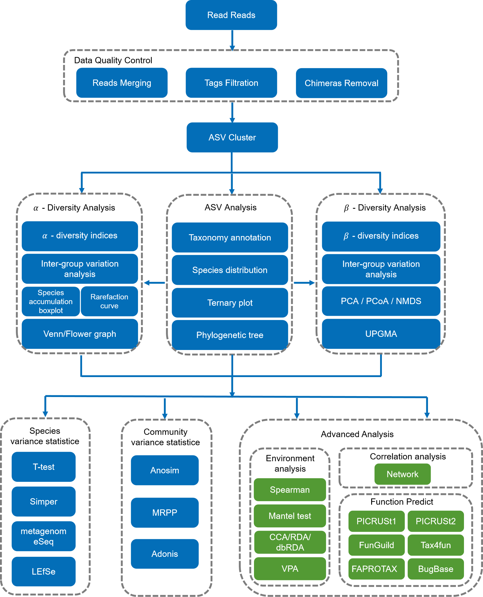
Figure 3.1 Analysis Workflow
Notes:
In the analysis workflow chart, the blue content is the standard analysis results, and the green content is the advanced analysis results. The result of advanced analysis is not provided by default. If you want to analyze advanced analysis, please fill in the corresponding part in the Bioinformatics Form.
If number of samples is less than 3, β-diversity cannot be carried out.
If less than 2 groups and less than 3 biological repetitions in each group, Difference of alpha diversity indices between groups, Community differences analysis(Species variance statistice, Community variance statistice) cannot be carried out.
Environmental factor correlation analysis requires the customer to provide environmental factor data.
Method details involved in the project are available at method.
Show Q&A
Q: What documents are included in the analysis deliverables?
The analysis results will be determined according to the actual analysis content of the customer. In general, it includes original offline data (result/00. Rawdata), filtered data (result/01. cleardata), species annotation data (result/02. OTUanalysis), sample complexity data (result/03. AlphaDiversity), community structure diversity data (result/04. BetaDiversity), interactive webpage display results (result/05. WebShow), functional analysis (result/06. Function_prediction) The final report (result/report X101SC ************) and read me. Please check ReadMe.html in the result file for details.
Q: What is the check size in the result?
The check size does not need to be processed. It is a file used to check whether the result download is complete. The value in the check size is the size of the result compressed package. The value unit of the check size is bytes.
Q: Interpretation of fastq files in clean data
The fastq file is data with base quality value. @ starts with id, the second line is sequence, the third line is+, and the fourth line is quality value.
Q: Is clear and complete for the icon annotation data in the result, and can it be further adjusted?
At present, the results displayed in the analysis report provided by us will be in the form of vector graph (pdf format or svg format), which conforms to the resolution, and can be modified with the help of an additional editor (color, font, column shape, size, etc.).
Q: The final report of the webpage version cannot view the table, only the header, no content.
It may be the compatibility/support problem of the browser. The tables in the report are controlled by JS language. The support of different browsers is different. Firefox browser is recommended (http://www.firefox.com.cn/) check the web version of the final report we delivered. If it is still not displayed, enter about:config in the Firefox address bar and search for privacy.file_unique_origin, change the value from true to false.
4 Analysis Results
4.1 Sequencing data processing
The amplicon was sequenced on illumina platform to generate paired-end raw reads (Raw PE), and then merged and pre-treated to obtain Clean Tags. The chimeric sequences in Clean Tags were detected and removed to obtain the Effective Tags which can be used for subsequent analysis. The summarizations obtained in each step of data processing are shown in the table as follow:
Table 4.1 QC statistics
| Sample | RawPE | Combined | Qualified | Nochime | Base(nt) | Avglen(nt) | GC | Q20 | Q30 |
|---|---|---|---|---|---|---|---|---|---|
| A1 | 164413 | 162636 | 162226 | 150049 | 37944563 | 252.88 | 54.65% | 99.48% | 97.91% |
| A2 | 103727 | 102231 | 101801 | 83809 | 21193801 | 252.88 | 52.59% | 99.43% | 97.72% |
| A3 | 105695 | 104106 | 103653 | 86929 | 21985665 | 252.92 | 52.18% | 99.41% | 97.68% |
| A4 | 113512 | 112027 | 111539 | 88067 | 22273787 | 252.92 | 52.51% | 99.44% | 97.75% |
| A5 | 105763 | 104532 | 104125 | 84932 | 21478385 | 252.89 | 52.81% | 99.46% | 97.86% |
| A6 | 106916 | 105598 | 105236 | 75480 | 19086764 | 252.87 | 53.03% | 99.46% | 97.82% |
| A7 | 106101 | 104699 | 104341 | 83993 | 21235171 | 252.82 | 52.56% | 99.46% | 97.82% |
| A8 | 119941 | 118544 | 118152 | 94454 | 23879302 | 252.81 | 52.21% | 99.46% | 97.85% |
| A9 | 105237 | 103603 | 103221 | 88742 | 22418005 | 252.62 | 53.15% | 99.41% | 97.64% |
| A10 | 102153 | 100661 | 100287 | 85484 | 21619313 | 252.90 | 52.39% | 99.43% | 97.72% |
| A11 | 103816 | 102460 | 102049 | 85058 | 21511550 | 252.90 | 50.66% | 99.44% | 97.80% |
| A12 | 109090 | 107492 | 107122 | 92291 | 23316203 | 252.64 | 52.27% | 99.44% | 97.73% |
| A13 | 103528 | 102219 | 101883 | 82489 | 20860684 | 252.89 | 51.92% | 99.45% | 97.79% |
| A14 | 105276 | 103853 | 103506 | 85151 | 21523210 | 252.77 | 52.56% | 99.45% | 97.76% |
| A15 | 105586 | 103884 | 103486 | 86045 | 21758676 | 252.88 | 51.24% | 99.40% | 97.62% |
| A16 | 105092 | 103533 | 103148 | 81867 | 20706413 | 252.93 | 51.10% | 99.44% | 97.73% |
| A17 | 104020 | 102857 | 102560 | 92470 | 23342888 | 252.44 | 54.10% | 99.39% | 97.48% |
| A18 | 102560 | 101538 | 101123 | 81717 | 20653107 | 252.74 | 53.43% | 99.42% | 97.75% |
| A19 | 113741 | 112725 | 112323 | 98432 | 24849852 | 252.46 | 53.84% | 99.44% | 97.84% |
| A20 | 105973 | 104973 | 104550 | 84431 | 21342166 | 252.78 | 52.84% | 99.43% | 97.78% |
| A21 | 105461 | 104368 | 103936 | 91101 | 23005951 | 252.53 | 52.72% | 99.40% | 97.70% |
| A22 | 112183 | 110882 | 110476 | 93871 | 23738613 | 252.89 | 51.28% | 99.43% | 97.77% |
| A23 | 116535 | 116083 | 115498 | 95401 | 24132616 | 252.96 | 50.32% | 99.28% | 97.42% |
| A24 | 102841 | 102427 | 101908 | 88087 | 22282772 | 252.96 | 49.78% | 99.24% | 97.34% |
| A25 | 104236 | 103816 | 103152 | 93851 | 23733652 | 252.89 | 52.01% | 99.21% | 97.24% |
| A26 | 113770 | 113348 | 112805 | 103185 | 26097009 | 252.91 | 51.34% | 99.34% | 97.55% |
| A27 | 106091 | 104388 | 104034 | 97163 | 24563189 | 252.80 | 53.23% | 99.28% | 97.16% |
| A28 | 105861 | 104543 | 104206 | 100417 | 25395690 | 252.90 | 53.94% | 99.34% | 97.43% |
| A29 | 102722 | 101251 | 100896 | 97064 | 24552164 | 252.95 | 53.46% | 99.34% | 97.33% |
| A30 | 114582 | 111678 | 111197 | 105370 | 26632579 | 252.75 | 52.31% | 99.13% | 96.58% |
| A31 | 103500 | 102123 | 101798 | 96418 | 24371606 | 252.77 | 52.43% | 99.30% | 97.29% |
| A32 | 103028 | 101676 | 101370 | 96477 | 24401489 | 252.93 | 53.39% | 99.34% | 97.36% |
| A33 | 116998 | 115326 | 114915 | 109771 | 27769444 | 252.98 | 52.34% | 99.30% | 97.26% |
| A34 | 105000 | 103661 | 103242 | 92687 | 23441270 | 252.91 | 52.65% | 99.30% | 97.27% |
| A35 | 103342 | 101950 | 101570 | 95006 | 24020334 | 252.83 | 52.57% | 99.30% | 97.25% |
| A36 | 103776 | 102254 | 101798 | 96280 | 24342240 | 252.83 | 51.68% | 99.23% | 97.04% |
| B1 | 71189 | 70962 | 70771 | 69689 | 17624039 | 252.90 | 54.11% | 99.52% | 98.15% |
| B2 | 51115 | 50921 | 50816 | 47212 | 11939295 | 252.89 | 53.29% | 99.58% | 98.33% |
| B3 | 73283 | 72960 | 72834 | 67205 | 16994870 | 252.88 | 53.18% | 99.58% | 98.33% |
| B4 | 69835 | 68798 | 68610 | 60727 | 15357038 | 252.89 | 53.35% | 99.40% | 97.68% |
| B5 | 117381 | 116960 | 116738 | 111158 | 28132782 | 253.09 | 54.28% | 99.61% | 98.42% |
| B6 | 117208 | 116852 | 116618 | 111523 | 28206626 | 252.92 | 52.72% | 99.57% | 98.31% |
| B7 | 89923 | 89615 | 89404 | 86120 | 21782025 | 252.93 | 53.22% | 99.57% | 98.28% |
| B8 | 134708 | 134267 | 133907 | 128228 | 32435973 | 252.96 | 53.38% | 99.52% | 98.11% |
| B9 | 177392 | 175425 | 174905 | 162729 | 41119782 | 252.69 | 54.17% | 99.45% | 97.82% |
| B10 | 55866 | 55611 | 55498 | 53859 | 13619720 | 252.88 | 53.94% | 99.63% | 98.49% |
| B11 | 180466 | 178786 | 178338 | 163443 | 41328370 | 252.86 | 54.39% | 99.47% | 97.90% |
| B12 | 106516 | 105710 | 105489 | 101730 | 25713410 | 252.76 | 52.22% | 99.48% | 97.92% |
| B13 | 103526 | 102811 | 102512 | 99239 | 25099620 | 252.92 | 50.14% | 99.42% | 97.85% |
| B14 | 110377 | 109263 | 108903 | 87968 | 22251115 | 252.95 | 52.98% | 99.49% | 97.96% |
| B15 | 101999 | 101073 | 100646 | 87457 | 22120211 | 252.93 | 52.20% | 99.45% | 97.86% |
| B16 | 112850 | 111917 | 111557 | 88185 | 22307650 | 252.96 | 51.76% | 99.50% | 98.00% |
| B17 | 103418 | 102112 | 101658 | 85391 | 21586512 | 252.80 | 53.59% | 99.45% | 97.81% |
| B18 | 102047 | 100805 | 100408 | 83518 | 21123118 | 252.92 | 52.80% | 99.44% | 97.75% |
| B19 | 106778 | 105390 | 104948 | 85565 | 21627288 | 252.76 | 52.84% | 99.45% | 97.82% |
| B20 | 103976 | 102434 | 102031 | 87159 | 22028727 | 252.74 | 51.48% | 99.43% | 97.70% |
| C1 | 89793 | 89523 | 89324 | 87755 | 22198868 | 252.96 | 53.75% | 99.53% | 98.18% |
| C2 | 135887 | 135440 | 135118 | 131753 | 33315843 | 252.87 | 53.90% | 99.51% | 98.14% |
| C3 | 132856 | 132232 | 131941 | 121156 | 30644970 | 252.94 | 53.27% | 99.57% | 98.33% |
| C4 | 133203 | 132722 | 132411 | 125234 | 31668353 | 252.87 | 53.18% | 99.59% | 98.37% |
| C5 | 141871 | 136987 | 136546 | 129529 | 32740391 | 252.76 | 54.27% | 99.23% | 96.91% |
| C6 | 132032 | 131641 | 131357 | 128179 | 32412091 | 252.87 | 53.53% | 99.56% | 98.26% |
| C7 | 146941 | 146282 | 145981 | 135384 | 34309214 | 253.42 | 53.02% | 99.57% | 98.29% |
| C8 | 133242 | 132858 | 132579 | 126655 | 32042551 | 252.99 | 53.46% | 99.60% | 98.35% |
| C9 | 133890 | 133324 | 133014 | 123028 | 31122331 | 252.97 | 52.51% | 99.49% | 98.06% |
| C10 | 123000 | 122612 | 122288 | 118667 | 29999635 | 252.81 | 53.30% | 99.51% | 98.10% |
| C11 | 136654 | 136227 | 135907 | 131296 | 33187594 | 252.77 | 53.69% | 99.49% | 98.05% |
| C12 | 54816 | 54506 | 54423 | 53191 | 13448822 | 252.84 | 53.36% | 99.60% | 98.39% |
| C13 | 177076 | 175463 | 175010 | 165866 | 41931341 | 252.80 | 53.03% | 99.48% | 97.91% |
| C14 | 118136 | 117325 | 117018 | 111324 | 28157367 | 252.93 | 52.04% | 99.33% | 97.56% |
| C15 | 119943 | 118546 | 118043 | 89185 | 22546978 | 252.81 | 53.33% | 99.45% | 97.82% |
| C16 | 105633 | 104314 | 103900 | 84447 | 21355655 | 252.89 | 52.05% | 99.41% | 97.70% |
| C17 | 105803 | 104329 | 103927 | 84488 | 21357515 | 252.79 | 51.64% | 99.43% | 97.74% |
| C18 | 103782 | 102321 | 101912 | 88480 | 22370710 | 252.83 | 52.93% | 99.40% | 97.64% |
| C19 | 110783 | 109507 | 109078 | 89301 | 22586744 | 252.93 | 51.76% | 99.43% | 97.77% |
| C20 | 103226 | 101097 | 100677 | 96708 | 24458302 | 252.91 | 53.53% | 99.25% | 96.99% |
Show Annotation
Notes:
(1) RawPE represents the original PE reads after sequencing;
(2) Combined represents tags merged from PE reads;
(3) Qualified represents tags after filtering;
(4) Nochime represents tags after filtering chimera and can be finally used for subsequent analysis;
(5) Base is the number of bases of the Effective Tags;
(6) AvgLen represents average length of Effective Tags;
(7) Q20 and Q30 are the percentages of bases whose quality value in Effective Tags is greater than 20 (sequencing error rate is less than 1%) and 30 (sequencing error rate is less than 0.1%);
(8) GC (%) represents GC content in Effective Tags;
Note: When conducting joint analysis or providing sample data for analysis, the quality control results of this part of the sample will not be displayed in the results.
Results directory:
Removed barcode and primer sequence (rawPE): result/01.RawData/Sample_Name/*_1(2).fastq.gz
Combined sequence: result/01.RawData/Sample_Name/*.extendedFrags.fastq.gz
Barcodes and primers information: result/01.RawData/SampleSeq_info.xls
Removed chimera sequence (Nochime): result/01.CleanData/Sample_Name/*.effective.fastq.gz,*.fna.gz
Customer provided data is not displayed in the table by default
Show Q&A
Flash software merging
Q: What are the conditions for combined reads that have overlap with Flash software? How to deal with those that do not meet the condition? How many bp should be removed from the 3' end and then continue merging?
Flash software has two important parameters in merging: the maximum mismatch rate (0.1) and the minimum overlap region (10bp), that is, we have to ensure that the mismatch rate is no more than 0.1 and the minimum overlap of PE reads is no less than 10 bases when splicing. Considering that the sequence quality at the 3' end has a systematic tendency to decrease, we will partially intercept the PEreads at the 3' end based on the length of the fragment to ensure the length of the overlap region of PE reads, which will help to ensure the quality of the bases in the overlap region and improve the merging rate.
Q: What is the difference between averaging, homogenization and standardization?
Averaging and homogenization both refer to the random sampling of sequences from different samples according to a certain rule (e.g., we go by the minimum number of sequences) so that the number of sequences in different samples is the same. Standardization is generally a Z-value calculation for data that fluctuates over a large range, scaling the data so that it falls into a small specific interval that is easy to display in a graph.
4.2 OTU/ASV analysis and taxonomic annotation
4.2.1 Denoise and Species Annotation
The DADA2 method (Callahan et al., 2016) is mainly used for noise reduction. It no longer uses similarity clustering, but only performs dereplication or equivalent to 100% similarity clustering. Each de-duplicated sequence generated after noise reduction using DADA2 is called ASVs (Amplicon Sequence Variants), or feature sequence (corresponding to the OTU representative sequence), and the abundance table of these sequences in the sample is called the feature table (corresponds to the OTU table). The DADA2 method is more sensitive and specific than the traditional OTU method and can detect the true biological mutations missed by the OTU method while outputting fewer false sequences (Callahan et al., 2019). Compared with OTUs, ASVs improve the accuracy, comprehensiveness, and repeatability of marker gene data analysis (Amir et al., 2017).
By applying QIIME2's classify-sklearn algorithm (Bokulich et al., 2018; Bolyen et al., 2019), a pre-trained Naive Bayes classifier is used for species annotation of each ASV. Annotation database of the project is Silva 138.1.
According to the results of ASVs annotations and the feature tables of each sample, the species abundance tables at the level of kingdom, phyla, class, order, family, genus, and species are obtained. These abundance tables with annotation information are the core content of amplicon analysis. According to different experimental purposes, one or several species of key concern can be selected from the species abundance table of each classification level (usually focusing on the phylum and genus level), combined with the species composition and differential analysis of different samples (groups), and cluster analysis to conduct in-depth research.
Note: Qiime1 analysis only contains OTU analysis results, while Qiime2 analysis only contains ASV analysis results.
Results directory:
Representative sequence: result/02.FeatureAnalysis/feature.fasta
Species abundance display table: result/02.FeatureAnalysis/tables/(sample,group)/featureTable_Relative/
4.2.2 Relative abundance
According to the taxonomic annotation results, the top 10 taxa of each sample or group at each taxonomic rank (Phylum, Class, Order, Family, Genus, Species) were selected to form the distribution histogram of the relative abundance of taxa. This allows the visualization of the taxa with a higher relative abundance and their proportion in different classification levels for each sample or group. The relative abundance of taxa in the phylum is illustrated below:


Figure 4.2 Taxa relative abundance in phylum
Show Annotation
Notes: Y-axis represents "Relative Abundance" and X-axis represents "Samples Name". "Others" represents a total relative abundance of the rest phyla besides the top 10 phyla.
Results directory:
The top 10 taxa relative abundance in each taxonomic rank: result/03.TaxonVisual/barplot/(sample,group)/ ; Including Phylum, Class, Order, Family, Genus and Species
4.2.3 Taxonomic abundance cluster heatmap
According to the abundance information of top 35 genus of all samples, the heatmap was drawn to check whether the samples with similar processing are clustered or not, while the similarity and differences of samples can also be observed. The result is shown as follows:


Figure 4.3 Taxonomic abundance cluster heatmap
Show Annotation
Notes: plotted by sample name on the X-axis and the Y-axis represents the genus. The absolute value of 'z' represents the distance between the raw score and the mean of the standard deviation. 'Z' is negative when the raw score is below the mean, and vice versa.
Results directory:
Taxonomic abundance heatmap in each taxonomic rank：result/03.TaxonVisual/heatmap/(sample,group)/ ; Including Phylum, Class, Order, Family, Genus and Species
4.2.4 Venn and Flower diagram
According to the analysis result of feature seqs and research requirements, we normalized the feature seq table, analyzed both the common and unique information for different samples (groups), and generated the Venn and Flower diagram.
Venn diagram based on feature seqs:
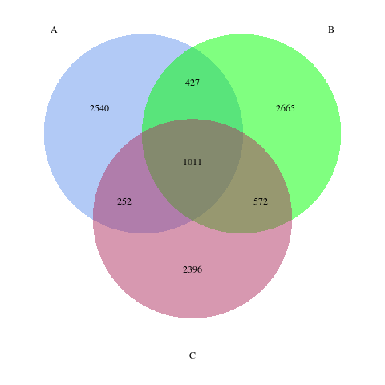
Figure 4.4 Venn diagram
To view full size picture please click here
Show Annotation
Notes: each circle represents one sample or group. Values in overlapping parts represent common feature seqs. The Others are specific feature seqs in each sample.
Results directory:
Venn diagrams：result/03.TaxonVisual/venn/(sample,group)/*
Venn diagram based on feature seqs:
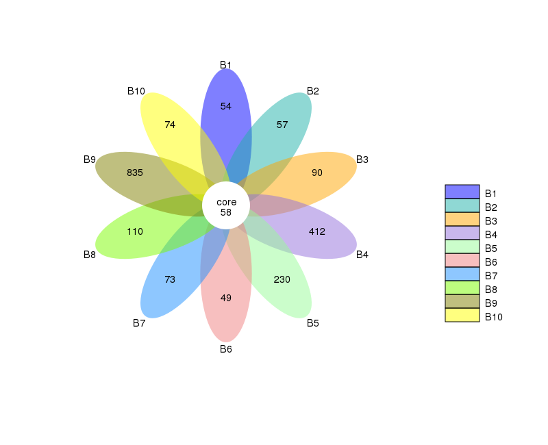
Figure 4.5 Flower diagram
To view full size picture please click here
Show Annotation
Notes: In the flower, each petal represents one (group) sample, different colors represent different samples (groups), the middle core number represents the number of feature sequences shared by all samples, and the number on the petal represents the number of feature sequences unique to this sample (group).
Results directory:
Venn diagrams：result/03.TaxonVisual/flower/(sample,group)/*
4.2.5 The evolutionary tree in genus
To further study the phylogenetic relationship of the genus, the top 100 genera were selected and the evolutionary tree was drawn using the aligned representative sequences. The relative abundance of each genus was also displayed along the genus in the figure as follow：
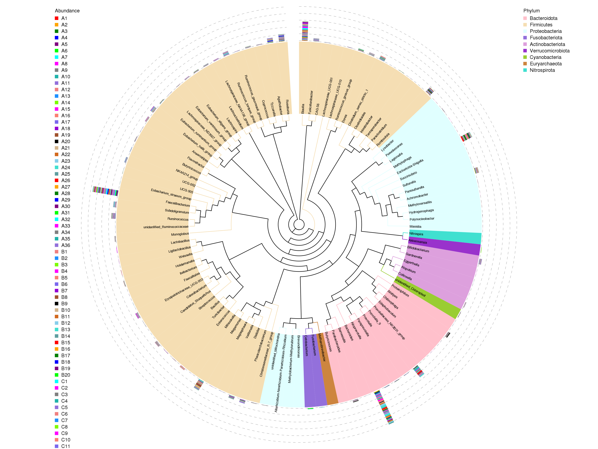
Figure 4.6 The evolutionary tree in genus
Show Annotation
Notes: different colors of the branches represent different phyla. Relative abundance of each genus in each group was displayed outside the circle and different colors represent different groups.
Results directory:
The evolutionary tree in genus by groups: result/03.TaxonVisual/tree100/(sample,group)/*
4.2.6 Ternary plot
To find the differences in dominant taxa among the three groups of samples at each taxonomic rank (Phylum, Class, Order, Family, Genus, Species), the top 10 taxa with the average abundance of the three groups of samples at each taxonomic rank were selected to generate ternary plot (Bulgarelli et al., 2015). The result is shown as follows:
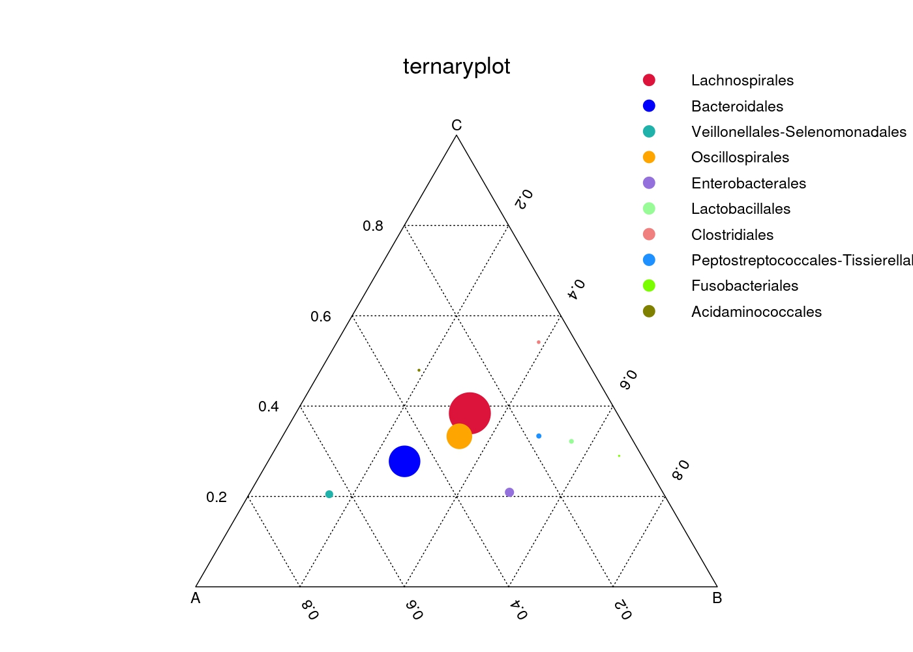
Figure 4.7 Ternary plot
To view full size picture please click here
Show Annotation
Notes: three vertexes represent three samples or groups. Circles represent dominant taxa and the size of circles are proportional to the relative abundance. The sample of group which the circle close to has higher abundance of this phylum.
Results directory:
Ternary plot: result/03.TaxonVisual/ternary/(sample,group)/*/*ternary.(pdf,jpeg), Including Phylum, Class, Order, Family, Genus and Species.
Show Q&A
Q: What are the main concerns of biological information analysis results ?
The species abundance of the sample includes absolute abundance and relative abundance. The downstream alpha and beta diversity analysis is also completed based on the homogenized abundance table. Through the species abundance table, we can directly understand the species composition and distribution in the sample, and also select significantly different species or target species for further analysis in combination with our own project background. Taking the Relative Catalog as an example, the catalog contains the relative abundance of each species at the 7 species classification levels (Kingom, Phylum, Class, Order, Family, Genus, Specie), and the relative abundance information of each characteristic sequence in each sample. To view the relative abundance of Actinomycetaceae in each sample, search for "Actinomycetaceae" in the file result/02.FeatureAnalysis/tables/(sample,group)/featureTable_Relative/*relative.xls to query the corresponding relative abundance information.
Interpretation of bacteria results
Q: What is the relationship between the NT database and the Silva database described in the final report ?
The Silva database is a database of general bacterial selection, which has been updated at present. The NT library is an NCBI nucleic acid library, which contains more information and many annotation results, including species other than bacteria.
Q: Why is there mitochondria (mitochondria?) and chloroplast (chloroplast?) in the 16S results? and chloroplast?
In our annotation results, mitochondria and chloroplast appear. The names in our annotation database are official names, which have their sources and bases. Mitochondria belongs to Proteobacteria (Proteobacteria), Alphaproteobacteria (α Proteobacteria), Rickettsiales (Rickettsiales), which is indeed a prokaryotic microbe. In addition, literatures: Fitzpatrick D A, Creevey C J, Mcinerney J O. Genome phytogenes indicate a meaningful alpha proterozoic physiology and support a grouping of the mitochondria with the Rickettsiales [J] Molecular Biology & Evolution， 2006， 23(1):74-85。 It is mentioned in this reference that mitochondria is classified as Rickettsiales. For chloroplast, which is common in cyanobacteria, it has been mentioned in many literatures and translated into chloroplast like cyanobacteria, but it is not recommended to translate it like this, and it can be named directly in Latin.
Interpretation of archaea results
Q: Why there are many bacteria in the results of archaea annotation ?
The reason is that the content of archaea in the sample is too low. Because of the high homology between archaea and bacteria, the high abundance of bacterial sequences will be amplified during PCR, which is unavoidable. In fact, this is also normal. Just like the endophyte, when the sample is contaminated with plant DNA, 16S primers will amplify the chloroplast sequence (the chloroplast sequence and bacterial sequence are also highly homologous). Therefore, the distribution of sample species directly determines the results of early PCR and late data analysis.
Q: How to understand "relative" in the relative abundance level of bar plot results ?
At a certain classification level (for example, Phylum, Class, Order, Family, Genus, Species), the relative abundance of the species is the number of tags corresponding to a certain level in the sample divided by the total number of tags obtained from the total clustering of the sample. At a taxonomic level, the sum of the relative abundance of all species in the same sample is equal to 1.
Q: Treatment methods for large differences in biological repeated results
We usually recommend more than 5 biological replicates, at least 3. For individual samples with large differences between duplicate samples, it is recommended that:
1) Biological replicates selected from samples may be influenced by many other factors in addition to the set grouping conditions, causing differences in analytical results.
2) For individual samples with significant outliers, it is speculated that the sample may be the cause (e.g., problems during sampling, preservation, extraction, amplification, etc.) and it is recommended that the sample be excluded from analysis.
Q: The union method of "representative sequence" of Venn diagram in groups:
When calculating the number of "representative sequences" in each group, the union method used for counting the representative sequences of the group (that is, if there is only one sample in the group with the representative sequence, it is considered that the representative sequence exists in the group. If there is no representative sequence in all the duplicate samples, it is considered that the representative sequence does not exist in the reorganization).
Q: What is the reason for the heavy host contamination in the amplicon data, and most of them can only be annotated to the Kingdom level after eliminating the hosts ?
The reason is that there are not many sequences left after eliminating the host, and the length of the remaining sequence fragments is short. A short sequence will be annotated to multiple species. When using the lca algorithm to annotate, you will get the annotation results of the previous level, and the results can only be annotated to the limit.
Q: What is the meaning of "others" in the bar plot of Taxa relative abundance?
The Species ranking 11 and later or those not annotated are classified as "others".
Q: What is the reason for some species in the abundance table end with _ or __ , and this species cannot be found in the database ?
If there is an underline at the end of a species name, it is because the species has different evolutionary relationships and some visualizations do not allow duplicate annotation names, so we use an underline to distinguish them. Specific annotation information can be found in the abundance table.
Why choose Micro_ NT database for species annotation ?
Micro_NT is a sub library obtained by extracting archaea, fungi, viruses, and bacteria from the NT. The reason of choosing Micro_NT is to pay more attention to information related to microorganisms.
Q: The relative abundance histogram of the Phylum level, the selection criteria of the top 10 Phylum ?
The maximum ranking method was used for the barplot of species abundance. Take the level top10 Phylum as an example: first take the maximum relative abundance of each Phylum in each sample, and then sort it. Then take the top ten Phylums for mapping. We can simply obtain the distribution of species with differences between samples in each sample.
4.3 Alpha Diversity Analysis
Alpha diversity is applied to the analysis of microbial community diversity within the sample (Li et al., 2013) by analyzing the diversity of a single sample (Alpha diversity) can reflect the richness and diversity of microbial communities in each sample, including species accumulation boxplot, biodiversity curves and a series of statistical analysis.
4.3.1 Alpha diversity indices
Generally speaking, the identity sequences of OTUs obtained through clustering or ASVs obtained through noised are considered homologous within species. Through such methods, α The statistical index of diversity is summarized as follows:
Table 4.2 Alpha diversity indices
| Sample_Name | chao1 | dominance | goods_coverage | observed_features | pielou_e | shannon | simpson |
|---|---|---|---|---|---|---|---|
| A1 | 1351.968 | 0.120 | 0.995 | 1210 | 0.546 | 5.594 | 0.880 |
| A2 | 401.738 | 0.033 | 0.999 | 385 | 0.703 | 6.035 | 0.967 |
| A3 | 412.103 | 0.030 | 0.999 | 395 | 0.714 | 6.162 | 0.970 |
| A4 | 472.750 | 0.031 | 0.999 | 439 | 0.706 | 6.199 | 0.969 |
| A5 | 479.091 | 0.045 | 0.999 | 462 | 0.652 | 5.768 | 0.955 |
| A6 | 474.909 | 0.032 | 0.999 | 467 | 0.699 | 6.201 | 0.968 |
| A7 | 412.800 | 0.050 | 0.999 | 398 | 0.662 | 5.716 | 0.950 |
| A8 | 477.920 | 0.030 | 0.999 | 446 | 0.706 | 6.218 | 0.970 |
| A9 | 380.286 | 0.131 | 0.999 | 358 | 0.573 | 4.861 | 0.869 |
| A10 | 400.000 | 0.048 | 0.999 | 378 | 0.682 | 5.841 | 0.952 |
| A11 | 386.292 | 0.061 | 0.999 | 357 | 0.662 | 5.616 | 0.939 |
| A12 | 613.371 | 0.144 | 0.998 | 573 | 0.518 | 4.744 | 0.856 |
| A13 | 395.941 | 0.042 | 0.999 | 384 | 0.702 | 6.023 | 0.958 |
| A14 | 392.000 | 0.041 | 0.999 | 383 | 0.694 | 5.955 | 0.959 |
| A15 | 393.156 | 0.046 | 0.999 | 383 | 0.674 | 5.781 | 0.954 |
| A16 | 491.167 | 0.048 | 0.999 | 462 | 0.694 | 6.143 | 0.952 |
| A17 | 198.143 | 0.063 | 0.999 | 185 | 0.629 | 4.734 | 0.937 |
| A18 | 454.429 | 0.043 | 0.999 | 436 | 0.674 | 5.911 | 0.957 |
| A19 | 302.667 | 0.277 | 1.000 | 295 | 0.481 | 3.950 | 0.723 |
| A20 | 374.636 | 0.039 | 0.999 | 351 | 0.693 | 5.858 | 0.961 |
| A21 | 361.583 | 0.200 | 0.999 | 346 | 0.503 | 4.241 | 0.800 |
| A22 | 364.667 | 0.039 | 1.000 | 357 | 0.714 | 6.057 | 0.961 |
| A23 | 261.240 | 0.072 | 1.000 | 252 | 0.621 | 4.955 | 0.928 |
| A24 | 355.022 | 0.088 | 0.999 | 331 | 0.568 | 4.755 | 0.912 |
| A25 | 253.562 | 0.036 | 1.000 | 247 | 0.712 | 5.659 | 0.964 |
| A26 | 273.333 | 0.047 | 0.999 | 254 | 0.678 | 5.415 | 0.953 |
| A27 | 320.286 | 0.061 | 1.000 | 316 | 0.634 | 5.267 | 0.939 |
| A28 | 202.882 | 0.192 | 1.000 | 199 | 0.527 | 4.021 | 0.808 |
| A29 | 238.105 | 0.139 | 1.000 | 234 | 0.553 | 4.353 | 0.861 |
| A30 | 406.353 | 0.021 | 1.000 | 394 | 0.762 | 6.572 | 0.979 |
| A31 | 397.917 | 0.023 | 1.000 | 390 | 0.761 | 6.547 | 0.977 |
| A32 | 269.636 | 0.087 | 0.999 | 256 | 0.618 | 4.940 | 0.913 |
| A33 | 278.000 | 0.038 | 0.999 | 265 | 0.694 | 5.583 | 0.962 |
| A34 | 260.120 | 0.043 | 1.000 | 254 | 0.678 | 5.415 | 0.957 |
| A35 | 392.667 | 0.025 | 1.000 | 387 | 0.746 | 6.409 | 0.975 |
| A36 | 393.038 | 0.020 | 1.000 | 389 | 0.770 | 6.624 | 0.980 |
| B1 | 196.667 | 0.055 | 1.000 | 195 | 0.663 | 5.047 | 0.945 |
| B2 | 328.667 | 0.028 | 1.000 | 325 | 0.746 | 6.225 | 0.972 |
| B3 | 409.615 | 0.018 | 1.000 | 405 | 0.779 | 6.749 | 0.982 |
| B4 | 689.942 | 0.019 | 1.000 | 687 | 0.751 | 7.081 | 0.981 |
| B5 | 549.603 | 0.135 | 0.999 | 530 | 0.575 | 5.204 | 0.865 |
| B6 | 344.333 | 0.054 | 0.999 | 325 | 0.679 | 5.667 | 0.946 |
| B7 | 371.276 | 0.053 | 0.999 | 343 | 0.665 | 5.603 | 0.947 |
| B8 | 400.923 | 0.061 | 0.999 | 360 | 0.636 | 5.399 | 0.939 |
| B9 | 1221.665 | 0.070 | 0.996 | 1121 | 0.579 | 5.863 | 0.930 |
| B10 | 285.714 | 0.106 | 1.000 | 282 | 0.588 | 4.787 | 0.894 |
| B11 | 1431.557 | 0.084 | 0.994 | 1294 | 0.573 | 5.921 | 0.916 |
| B12 | 581.000 | 0.067 | 0.998 | 540 | 0.561 | 5.089 | 0.933 |
| B13 | 410.500 | 0.119 | 0.998 | 375 | 0.511 | 4.368 | 0.881 |
| B14 | 310.091 | 0.030 | 0.999 | 296 | 0.709 | 5.817 | 0.970 |
| B15 | 307.913 | 0.110 | 0.999 | 289 | 0.615 | 5.030 | 0.890 |
| B16 | 346.500 | 0.047 | 0.999 | 330 | 0.683 | 5.716 | 0.953 |
| B17 | 450.615 | 0.105 | 0.999 | 421 | 0.590 | 5.146 | 0.895 |
| B18 | 398.216 | 0.060 | 0.999 | 388 | 0.682 | 5.867 | 0.940 |
| B19 | 361.034 | 0.059 | 0.999 | 345 | 0.643 | 5.422 | 0.941 |
| B20 | 655.900 | 0.066 | 0.998 | 619 | 0.602 | 5.579 | 0.934 |
| C1 | 211.550 | 0.120 | 1.000 | 207 | 0.567 | 4.364 | 0.880 |
| C2 | 357.920 | 0.149 | 0.999 | 326 | 0.497 | 4.149 | 0.851 |
| C3 | 895.821 | 0.018 | 0.998 | 851 | 0.753 | 7.325 | 0.982 |
| C4 | 518.808 | 0.046 | 0.999 | 475 | 0.664 | 5.906 | 0.954 |
| C5 | 460.294 | 0.058 | 0.999 | 415 | 0.609 | 5.299 | 0.942 |
| C6 | 286.050 | 0.083 | 0.999 | 258 | 0.601 | 4.817 | 0.917 |
| C7 | 931.432 | 0.026 | 0.998 | 866 | 0.695 | 6.780 | 0.974 |
| C8 | 585.400 | 0.062 | 0.998 | 527 | 0.623 | 5.631 | 0.938 |
| C9 | 730.983 | 0.027 | 0.999 | 694 | 0.709 | 6.691 | 0.973 |
| C10 | 280.857 | 0.053 | 0.999 | 271 | 0.656 | 5.302 | 0.947 |
| C11 | 352.562 | 0.082 | 0.999 | 323 | 0.606 | 5.049 | 0.918 |
| C12 | 271.882 | 0.085 | 1.000 | 271 | 0.620 | 5.013 | 0.915 |
| C13 | 879.084 | 0.088 | 0.996 | 772 | 0.538 | 5.160 | 0.912 |
| C14 | 740.776 | 0.046 | 0.998 | 710 | 0.618 | 5.851 | 0.954 |
| C15 | 535.667 | 0.045 | 0.999 | 501 | 0.658 | 5.898 | 0.955 |
| C16 | 349.714 | 0.028 | 0.999 | 339 | 0.726 | 6.103 | 0.972 |
| C17 | 430.727 | 0.039 | 0.999 | 404 | 0.687 | 5.951 | 0.961 |
| C18 | 360.091 | 0.048 | 0.999 | 351 | 0.672 | 5.680 | 0.952 |
| C19 | 384.500 | 0.024 | 0.999 | 368 | 0.731 | 6.232 | 0.976 |
| C20 | 276.240 | 0.105 | 1.000 | 267 | 0.570 | 4.595 | 0.895 |
Show Annotation
The definition of each alpha diversity indices can be found in QA part.
(1) chao1: The total number of species contained in the community sample was estimated. The more low-abundance species in the community, the greater the chao1 index.
(2) dominance: The smaller the probability of randomly selecting two sequences from the same sample, the better the homogeneity of community species, and the smaller the index.
(3) goods_coverage: The higher the sequencing coverage, the greater the index.
(4)observed_features: The number of species observed, the higher the index, the more species observed.
(5) pielou_e: Uniformity index, the more uniform the species, the greater the pielou_e.
(6) shannon: The total number of taxa in the samples and their percentage. The higher the community diversity and the more evenly distributed the species, the greater the shannon index.
(7) simpson: The diversity and evenness of species distribution within the community were characterized, and the better the species evenness, the greater the Simpson index.
Results directory:
Alpha Diversity indices statistics: result/04.AlphaDiversity/sample/1_2.alpha_index_table/alpha_diversity_index.sample.txt
4.3.2 Biodiversity curves:
Rarefaction curves and Rank abundance curves are widely used for indicating the biodiversity of the samples. A rarefaction curve is created by selecting randomly certain amount of sequencing data from the samples, then counting the number of the species they represent (i.e.,the number of OTUs). The Rarefaction curves can directly reflect the rationality of the sequencing data volume and indirectly reflect the richness of microbial community in the samples. If the curve is steep, it means that a lot of the species remain to be discovered. If the curve becomes flatter, a credible number of samples have been taken, which means only the scarce species remain to be sampled. (number of reads chosen for normalization: cutoff=46733.)

Figure 4.8 Rarefaction Curves
Show Annotation
Notes: in the Rarefaction curves, each curve represents a sample, and can be colored and shaped by each sample name supplied in the mapping file. The sequence number is on the X-axis and the observed OTUs number is on the Y-axis.
Species accumulation boxplot is used to show the diversity and also be used to judge the adequacy of sample size and predict the richness of microbial community. The result is shown the in the figure as follow:
To view full size picture please click here
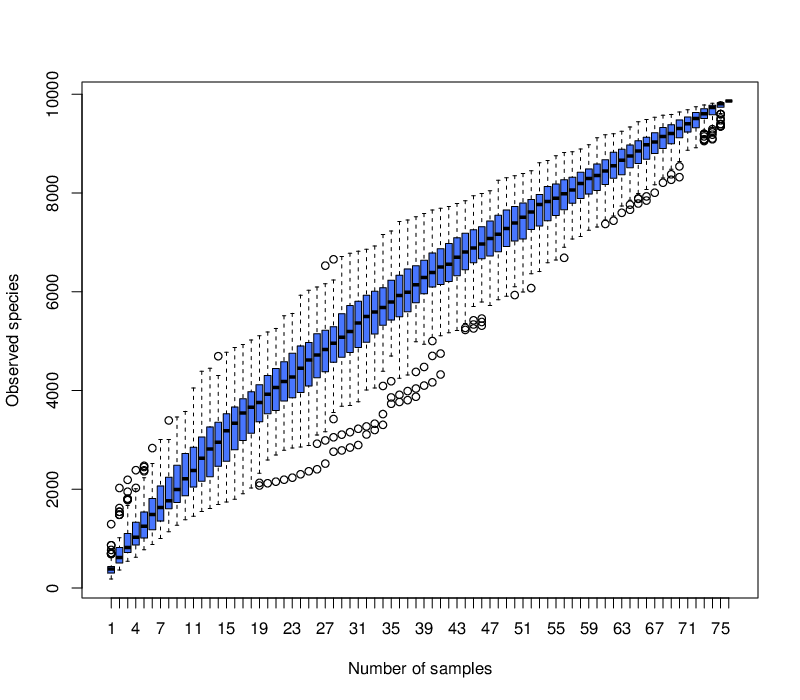
Figure 4.9 Species accumulation boxplot
Show Annotation
Notes: plotted by the "Sample num" on the X-axis and "OTU_num" on the Y-axis. With the increase of sample size, the boxplot showing a sharp rise indicates large amount of species found in samples while the boxplot turning to flat represents adequate sample numbers.
Rank abundance curve is used to sort the feature sequences in the sample through the relative abundance (or the number of sequences included) from the largest to the smallest in order to obtain the corresponding sorting number. By setting the OTUs sorting number as the abscissa, and the relative abundance in the OTUs (also the relative percentage of the number of sequences in the OTUs) as the ordinate, the points were connected with polylines to obtain the Rank abundance curve, which can directly reflect the species richness and evenness within the samples.
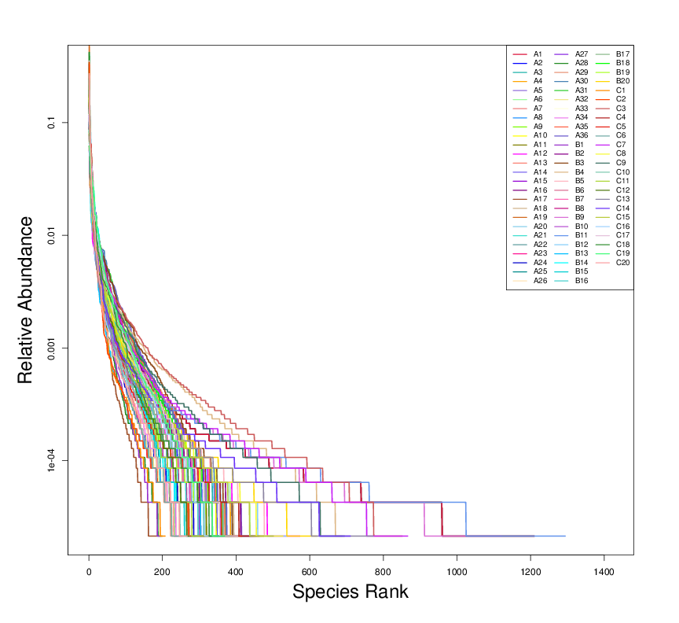
Figure 4.10 Rank Abundance curves of Alpha
To view full size picture please click here
Show Annotation
Notes: in the Rarefaction curves, each curve represents a sample, and can be colored and shaped by each sample name supplied in the mapping file. The sequence number is on the X-axis and the observed OTUs number is on the Y-axis. For the Rank abundance curves, each curve represents a single sample, plotted by OTU relative abundance on the Y-axis and the OTU abundance rank on the X-axis, which can be colored and shaped by each sample name supplied in the mapping file.
Results directory:
The result of Rarefaction curves: result/04.AlphaDiversity/visual_rarefaction/(sample,group)/*
The result of Accumulation boxplot: result/04.AlphaDiversity/visual_specaccum/sample/*.(png,pdf)
The result of Rank abundance curves: result/04.AlphaDiversity/visual_rankAbundance/(sample,group)/*.(png,pdf)
4.3.3 Difference of alpha diversity indices between groups
Boxplots were formed to analyze the differences in Alpha Diversity indices between groups. T-test, Wilcox,Kruskal-Wallis and Tukey tests (Wilcox test are for 2 groups while Kruskal-Wallis and Tukey tests are for more than 2 groups) were performed for the significant difference analysis between groups. Boxplots based on Observed_species and Shannon indices are shown as follow, which can reflect the maximum, minimum, median and abnormal value of index from each groups:
Figure 4.11 Boxplots for difference of alpha diversity indices
Note: The horizontal axis of the box plot represent the groups, while the vertical axis represents the corresponding alpha diversity index value.
Box plots with Alpha Diversity indices：
Results directory: result/04.AlphaDiversity/visual_alphaDiversity/group/*
Show Q&A
Q: What do alpha diversity results look for?
The assessment of species richness and homogeneity within the samples is presented in result/03.AlphaDiversity/alpha_diversity_index.txt, which contains the results of seven different Alpha diversity indices (ACE, chao1, goods_coverage, observed_ speciesshannon, simpson, PD_whole_tree) were calculated, and the index values reflect the magnitude of complexity within the sample communities. By looking at the results of the significance test of the alpha diversity index between groupings (result/03.AlphaDiversity/Alpha_div/*.txt), the groupings with significantly higher or lower species diversity can be quickly found for further analysis in conjunction with biological treatments.
Q: What is Alpha-diversity and Beta-diversity?
Alpha-diversity is mainly concerned with the number of species in a focal homogeneous ecological context, and is therefore also referred to as diversity within an ecological context. In the analysis, several different Alpha-diversity indices of Observed-species, Chao1, Shannon, Simpson, and Good- coverage were selected to characterize the diversity and homogeneity of species distribution in the samples, and to visualize the sequencing depth and data volume.
Reference website:
Observed-species - observed_otus (http://scikit-bio.org/docs/latest/generated/skbio.diversity.alpha.observed_otus);
Coverage - the Good’s coverage (http://scikit-bio.org/docs/latest/generated/skbio.diversity.alpha.goods_coverage);
Chao - the Chao1 estimator (https://scikit-bio.org/docs/latest/generated/skbio.diversity.alpha.chao1.html);
ACE - the ACE estimator (http://scikit- bio.org/docs/latest/generated/skbio.diversity.alpha.ace.html#skbio.diversity.alpha.ace);
Shannon - the Shannon index (https://scikit-bio.org/docs/latest/generated/skbio.diversity.alpha.shannon.html);
Simpson - the Simpson index (https://scikit-bio.org/docs/latest/generated/skbio.diversity.alpha.simpson.html);
PD_whole_tree - PD_whole_tree index(http://scikit- bio.org/docs/latest/generated/skbio.diversity.alpha.faith_pd.html?highlight=pd#skbio.diversity.alpha.faith_pd)
Beta-diversity refers to the dissimilarity of species composition between different communities along an environmental gradient or the rate of species turnover along an environmental gradient also known as inter-ecological diversity. We mainly use (un)weightedunifrac, i.e., weighted and unweighted unifrac algorithm, and also Bray-curtis algorithm. The unweightedunifrac algorithm calculates the distance matrix between samples without considering the ASV abundance, while the weighted unifrac takes into account the ASV abundance information. The Bray-curtis algorithm incorporates species abundance information, but does not take into account species evolutionary relationships.
(un)weighted unifrac：http://en.wikipedia.org/wiki/UniFrac
Bray-curtis：http://en.wikipedia.org/wiki/Bray-Curtis_dissimilarity
Q: Calculation of Alpha Diversity and the Principle of Sequence Extraction in Rarefaction Curve Plotting
The default parameters of Qiime software were used to set the minimum number of extracted sequences as 10, the maximum number of extracted sequences as the minimum number of corresponding sequences among all samples, and the step size as (maximum number of extracted - minimum number of extracted)/10, with 10 repetitions of sampling in each step.
For details, please refer to: http://qiime.org/scripts/alpha_diversity.html.
Q: What is the meaning and difference between several Alpha Diversity Indices?
Observed_species index: The number of species (i.e., the number of ASVs) visually observed is counted by randomly sampling a certain amount of sequenced data from the sample. The Rarefaction Curve is a curve constructed from the amount of data extracted and the number of corresponding species. When the curve tends to be flat, it indicates that the amount of sequencing data is progressively reasonable, and more data will only produce a small number of new ASVs.
Goods_coverage index: It is a more commonly used index of sequencing depth, which includes the number of ASVs containing only one sequence and the total number of sequences present in the sample in the calculation, so it can reflect the sequencing depth of the sample more realistically.
Chao1 index: It is one of the widely used Alpha diversity measures in ecology to estimate the total number of species contained in community samples. It also provides a good representation of the presence of low abundance species in the community because it incorporates information on species with abundance of 1 and 2 in its calculation.
ACE index (Abundance Coverage based Estimator): is an index used to estimate the number of ASVs in a community, and is one of the common indices used in ecology to estimate the total number of species. It differs from the Chao1 algorithm in that the number of species with only 1 occurrence, species with 10 or fewer occurrences, and species with more than 10 occurrences are counted separately in its calculation and used as the basis for assessing the number of unmeasured species. ACE takes into account not only the abundance of species but also the probability of species occurrence in the sample, and is therefore a better index of the overall condition of the community anyway.
Shannon diversity index: also known as Shannon-Wiener or Shannon-Weaver index. It is calculated by taking into account the total number of taxa in the sample (Richness), and the proportion of each taxon (Abundance). The higher the community diversity and the more evenly distributed the species, the higher the Shannon index.
Simpson Index: characterizes the diversity and evenness of species distribution within a community by calculating the probability that two randomly sampled individuals belong to different species. Simpson's index can be described at http://www.countrysideinfo.co.uk/simpsons.htm
PD_whole_tree Index: PD index is calculated based on evolutionary distance, and it responds to the kinship of species within the community. The more complex the kinship, the more distant the evolutionary distance, the larger the PD index.
Both shannon and simpson indices are used to describe community diversity (species richness and evenness), while for simpson's index there are three presentations, namely Simpson's Index (D), Simpson's Index of Diversity (1 - D) and Simpson's Reciprocal Index (1 / D). They have similar effects in reflecting community diversity but the results are calculated in different forms. The Simpson's Index of Diversity (1 - D) is the probability that two randomly sampled individuals belong to different species, i.e., the larger the simpson's index, the higher the diversity of the community (the greater the probability that the two sampled individuals belong to different species), so the calculated results and the reflected trend are synchronized with the shannon index. There is also a Simpson's Index (D), which is the probability that two randomly sampled individuals in a community belong to the same species, which is the opposite of the shannon index.
Q: Does the unsaturated ASV Rarefaction curve (not reaching plateau) mean that there is not enough data?
The Rarefaction Curve, which is a random sampling of a certain amount of sequencing data from a sample, counts the number of species they represent (i.e., the number of ASVs). In a dilution curve, when the curve tends to be flat, it indicates that the amount of sequencing data is progressively reasonable, and more data volume will only generate a small number of new OTUs. However, as the amount of sequencing data continues to increase, the curve may have a tendency to increase under relatively relaxed QC conditions, mainly because of sequencing errors and increasing abundance information of sequencing products, causing the curve to maintain an increasing trend.
4.4 Beta Diversity Analysis
Beta Diversity is a comparative analysis of microbial community composition of different samples. First, according to the taxonomy annotation results of all samples and the abundance information of feature sequences, the feature sequence information of the same classification is combined to obtain the species abundance information table (Profiling Table). At the same time, the phylogenetic relationship between feature sequences is used to further calculate the unweighted unifrac distance (Lozupone C et al., 2005; Lozupone C et al., 2011). Unifrac distance is to calculate the distance between samples by using the evolutionary information between microbial sequences in each sample. If there are more than two samples, a distance matrix can be obtained. Then, the weighted unifrac distance (unweighted unifrac) is further constructed using the abundance information of the feature sequence (Lozupone CA et al., 2007). Finally, the differences between different samples (groups) were found through Beta diversity index inter group difference analysis, multivariate statistical methods such as Principal Component Analysis (PCA), Principal coordinates Analysis (PCoA), and Non-Metric Multidimensional Scaling (NMDS).
4.4.1 Beta diversity heatmap
Weighted Unifrac distance and Unweighted Unifrac distance were selected to measure the dissimilarity coefficient between pairwise samples, which is a widely used phylogenetic measurement method in microbial community sequencing projects. The heatmap based on the Weighted Unifrac and Unweighted Unifrac distances is plotted in the figure as follow：
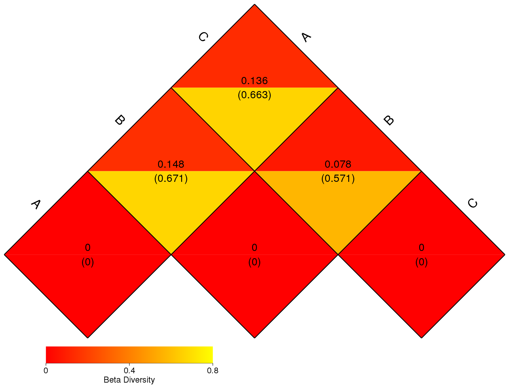
Figure 4.12 Beta diversity heatmap
Show Annotation
Notes: each grid represents pairwise dissimilarity coefficient between pairwise samples, in which Weighted Unifrac distance displayed above and Unweighted Unifrac distance conversely.
Results directory:
Beta diversity heatmap: result/05.BetaDiversity/beta_unifracHeatmap/(sample,group)*(svg,png)
4.4.2 Unweighted Pair-group Method with Arithmetic Mean(UPGMA)
To study the similarity among different samples, clustering analysis was used to construct a cluster tree. The Unweighted Pair-group Method with Arithmetic Mean (UPGMA) is a hierarchical clustering method widely used in ecology for the classification of samples (Backeljau T et al.,1996). The basic ideas of UPGMA are as follow. First, samples with the closest distance are clustered together to form a new node (as a new sample). Its branching point is 1/2 away from the original two samples. Then the average distance between the newly created "sample" and other samples is calculated and the two closest samples could be found again to repeat above steps. A complete clustering tree could be obtained until all samples are clustered together.
Weighted Unifrac distance matrix was calculated before used for UPGMA cluster analysis. They were displayed with the integration of clustering results and the relative abundance of each sample by phylum in the figure as follow:

Figure 4.13 UPGMA cluster tree based on Weighted Unifrac distance
Notes: plotted with UPGMA tree on the left and the relative abundance in phylum map on the right.
Results directory:
UPGMA results in (un)weighted_unifrac distance: result/05.BetaDiversity/beat_upgma/(sample,group)/*
4.4.3 Principal Coordinates Analysis (PCoA)
Principal Coordinates Analysis (PCoA) is an ordination technique, which picks up the main elements and structures from reduced multi-dimensional data series of eigenvalues and eigenvectors. The technique has the advantage over PCA in that each ecological distance can be investigated. Weighted Unifrac and Unweighted Unifrac are calculated to assist the PCoA analysis. The result is shown as follows:
The 2D PCoA diagram is presented in the first and second principal coordinates. The display results are as follows:
To view full size picture please click here

Figure 4.14 PCoA based on Weighted Unifrac distance(left) and Unweighted Unifrac distance(right)
Notes: each point represents a sample, plotted by a principal component on the X-axis and another principal component on the Y-axis, which was colored by group. The percentage on each axis indicates the contribution value to discrepancy among samples.
And the 3D PCoA map selects three main coordinates for interactive web page display, and the coordinates can be flexibly adjusted. The display results are as follows (real PCoA figures of our sample can be viewed by clicking the link below):
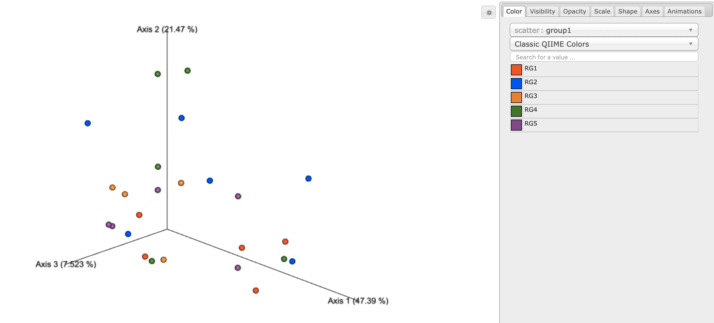
Figure 4.15 3D PCoA
weighted_unifrac 3D PCoA To view full size picture please click here
unweighted_unifrac 3D PCoA To view full size picture please click here
Results directory:
result/05.BetaDiversity/beta_pcoa/(sample,group)/*
4.4.4 Principal component analysis (PCA)
PCA (Jolliffe I T et al., 1986) is a method based on Euclidean distances to apply variance decomposition to reduce the dimensions of multidimensional data, so as to extract the most important elements and structures in the data (Avershina E et al., 2013). PCA analysis can extract two coordinate axes that reflect the difference between samples to the greatest extent, so as to reflect the difference of multidimensional data on the two-dimensional coordinate map, and then reveal the simple rules under the background of complex data. If the community composition of the samples is more similar, their distances in the PCA map are closer. PCA analysis results based on feature sequence level are shown as follows:
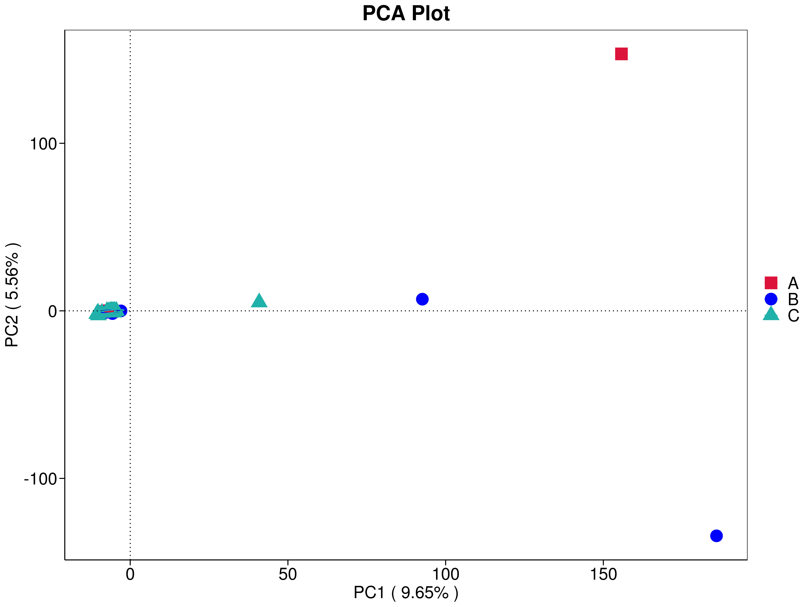
Figure 4.16 PCA
To view full size picture please click here
Notes: each point represents a sample, plotted by the second principal component on the Y-axis and the first principal component on the X-axis, which was colored by group.
Results directory:
PCA result: result/05.BetaDiversity/beta_pca/(sample,group)/*
4.4.5 Non-Metric Multidimensional Scaling (NMDS)
Non-metric multidimensional scaling analysis is a ranking method applicable to ecological research (Noval et al., 2013). It’s a non-linear model designed for a better representation of non-linear biological data structure aiming at overcoming the flaws in methods based on a linear model, including PCA and PCoA. The result of NMDS analysis based on OTUs is in the figure as follows:

Figure 4.17 NMDS based on Weighted Unifrac distance(left) and Unweighted Unifrac distance(right)
To view full size picture please click here
Notes: each data point in the graph stands for a sample. The distance between data points reflects the extent of variation. Samples belongs to the same group are in the same color. When the value of Stress factor is less than 0.2, it’s considered that NMDS is reliable to some extent.
Results directory:
NMDS result: result/05.BetaDiversity/beta_nmds/(sample,group)/*
Show Q&A
Q: What do beta diversity results look for?
For beta diversity analysis, that is, comparison of microbial community structure differences among samples, there are many analysis methods.
The degree of difference in community structure between two samples can be visualized by the unifrac distance between two samples. The results are detailed in result/05.BetaDiversity/beta_distance/(sample,group)/(un)weighted_unifrac.(sample,group).txt
The difference of this community structure can be displayed in two dimensions through PCA, PCoA and NMDS dimension reduction maps. The difference of community structure between groups (or samples) can also be judged by the aggregation and separation of grouped samples (or single samples).
The samples can be clustered through the UPGMA clustering tree (result/05.BetaDiversity/beta_upgma), and the similarity clustering between samples can be seen more clearly.
Through the analysis results of beta diversity, we can see whether the difference in community structure between samples is consistent with biological grouping, and explain this clustering or difference in combination with biological problems. In addition, UPGMA can interpret the clustering of samples in combination with the distribution of high abundance classification.
For grouped projects, in-depth research can be conducted through statistical analysis. Through LEfSe analysis, Biomarker with statistical difference between groups can be found. T-test and MetagenomeSeq analysis can make significant analysis of species difference between groups at 6 levels of phyla, class, order, family, genus and species, and then obtain species with significant difference between two groups at different levels. Quantify the contribution of species to the difference through Simper analysis. Anosim and MRPP analysis can judge whether the difference of community structure between groups is significant, and can also compare the size of intra group difference and inter group difference.
In addition, if you want to know the impact of environmental factors on the microbial community structure, or the important environmental driving factors affecting the distribution of samples, you can choose the environmental factor correlation analysis. Combined with the community diversity index, the environmental impact factors that significantly affect the species richness and evenness of the community can be obtained.
Q: Interpretation of PCA analysis
In multivariate statistical analysis, principal components analysis (PCA) is a technique for analyzing and simplifying data sets. Principal components analysis is often used to reduce the dimensionality of a dataset while maintaining the features in the dataset that contribute the most to each other's variance. This is done by keeping the lower-order principal components and ignoring the higher-order principal components. The mathematical definition of PCA is an orthogonalized linear transformation that transforms the data into a new coordinate system such that the first major variance of any projection of this data is at the first coordinate (called the first principal component), the second major variance is at the second coordinate (the second principal component), and so on. Given a set of points in Euclidean space, the first principal component corresponds to a line that averages the points through the multidimensional space while ensuring that the sum of squares of the distances from each point to this line is minimized. After removing the first principal component, the second principal component is obtained in the same way. The input data for the PCA plot is the sample microbial species abundance, with the first principal component, i.e., the dimension that contributes most to the difference in species abundance between samples, and the second principal component, i.e., the dimension that contributes second most to the difference in species abundance between samples, in the horizontal coordinate, and the second principal component, i.e., the dimension that contributes second most to the difference in species abundance between samples, in the vertical coordinate. Each sample point represents the projection of the sample point in the multidimensional space of species abundance on the plane of the first and second principal components.
Q: PCA charting script
PCA uses the dudi.pca function from the ade4 R package for Pca
Q: What are the input files for PCoA?
Input file: sorted_otu_table.Biom (OTU table in biom format), all.mf (grouping file), rep_Set.tre (evolution tree file), beta_params.txt (parameter file, which can not be set) to get the unifrac distance file (un)weighted_unifrac_dm.txt is used as the input to draw a PCoA diagram with R.
Q: Interpretation of PCoA Analysis
PCoA is a method to extract main variables from complex multidimensional variable data and visualize them. Similar to the main idea of PCA, the purpose of PCoA is to find some main coordinate systems in a matrix. In our 16S information analysis process, the input file of PCoA is the beta diversity distance matrix, which is the difference value matrix composed of the OTU abundance of two samples. After PCoA analysis, the following file is generated: where, is listed as the sample, representing the principal coordinate axis, and the lowest is the percentage of the characteristic value and the difference that can be explained by each coordinate.
Q: Differences and Selection of PCoA/UPGMA Maps Plotted by Weighted and Unweighted Distances
The difference between the two is that the former takes into account the abundance information of OTUs in the sample when calculating the distance between community samples, while the latter does not take into account the relative abundance information. If the biological problems studied are closely related to abundance information, the weighted results may be more appropriate. If the biological problems studied are not closely related to abundance, or the distinction between groups is more closely related to low abundance OTUs, the unweighted results may be more appropriate. If we do not know whether the biological problems studied are closely related to abundance, we can use this method to see which method is more effective in classification.
Q: The analysis principle of (Un) Weighted Unifrac
Our Unweighted Unifrac and Weighted Unifrac are obtained by using QIIME software. The process of building the Unifrac distance is as follows: for 16s rDNA, PyNAST can be used to build the phylogenetic relationship between OTUs, and further calculate the Unweighted Unifrac distance. Unifrac distance is to calculate the distance between samples by using the evolutionary information between microbial sequences in each sample. If there are more than two samples, a distance matrix can be obtained. Then, we use the abundance information of OTUs to further construct the Weighted Unifrac distance (Unweighted Unifrac).
Q: When using QIIME to draw PCoA, there are two sets of data, discrete vs continuous, what is the difference between them?
Discrete vs continuous refers to the method of coloring samples (groups). For example, for continuous factors such as PH, time, temperature, etc., continuous will color according to the color gradient from red to blue according to the grouping. On the contrary, if it is a discrete factor of different groups studied, it is recommended to use discrete. In a word, the difference between the two is that the coloring method is inconsistent when drawing, and the spatial distribution of PCoA is consistent.
Q: What does UPGMA Weighted Unifrac mean? Why use it as an indicator?
The two figures are UPGMA figures gathered by UniFrac software. Generally, the unweighted method is used when the research purpose is only concerned about the existence of species. If the species abundance needs to be considered for clustering, the weighted method is selected. It refers to the data type used in the calculation of distance matrix, and is a clustering distance widely used in microbial community research. If you are interested, you can refer to the literature in this field: Research on Statistical Methods in Macrogenomic Data Analysis. For a detailed description of UniFrac, see the website: http://www.tinygene.com/statistic-analysis/unifrac.
Q: The column graph in the unweighted clustering tree of UPGMA is inconsistent with that in the relative abundance column graph of top10. Why?
The column graph in the UPGMA clustering tree selects the top 10 gate, which is divided into weighted and unweighted. Among them, based on the graph made by weighted distance, two factors were considered in the calculation: the existence of species and the abundance of species, such as the number of occurrences of OTUs corresponding to species A at the phylum level in the sample, and the abundance of each occurrence is a, b, etc. The number of occurrences of species A and the abundance of each occurrence are considered in the calculation. The result of the column graph here is similar to that of the top 10 relative abundance column graph. In the graph based on the unweighted distance, only the existence of species is considered in the calculation, for example, the OTU corresponding to species A at the phylum level is counted as 1 when it appears in the sample once, regardless of the abundance of the OTU corresponding to species A in the sample. Therefore, although the species is still top10, the corresponding column length will change.
Q: What about the maximum, minimum, median, outliers and boundary values of the unweighted_unifrac box chart in the beta.div?
These specific values are calculated according to the distance matrix and are intermediate files during our analysis, so they are not provided to the teacher in the results.
4.5 Community differences analysis
The Adonis and Anosim analysis methods allow the analysis of inter-group community structure variability. Through statistical analysis, species with significant variation in abundance between groups can be targeted and the enrichment of differential species within different subgroups can be obtained.
4.5.1 Analysis of Similarity (Anosim)
Anosim analysis is a nonparametric test to evaluate whether variation among groups is significantly larger than variation within groups, which helps to evaluate the reasonability of the division of groups. The results are shown in the table as follow:
Table 4.3 Anosim results
| Group | R-value | P-value |
|---|---|---|
| A-B | 0.18781 | 0.001 |
| A-C | 0.21983 | 0.001 |
| B-C | -0.04244 | 0.964 |
Notes: R-value is between -1 and 1. A positive R value means that inter-group variation is considered significant, while a negative R-value suggests that inner-group variation is larger than inter-group variation, therefore, no significant differences. The confidence degree is represented by P-value, whose value less than 0.05 suggests statistical significance.
Results directory:
Anosim result: result/06.StatisticalTest/anosim/*
4.5.2 Multi-response permutation procedure (MRPP) analysis
MRPP analysis (O'Reilly FJ et al.,1980) similar with Anosim, which aims at determining whether the difference of microbial community structure among groups is significant. It’s usually applied with methods of dimension reduction like PCA, PCoA, and NMDS. The result is shown in the table as follow:
Table 4.4 MRPP result
| Group | A | observed-delta | expected-delta | Significance |
|---|---|---|---|---|
| A-B | 0.01998 | 0.67457 | 0.68832 | 0.001 |
| A-C | 0.02525 | 0.6699 | 0.68725 | 0.002 |
| B-C | -0.00575 | 0.70815 | 0.70411 | 0.919 |
A small value in the column titled observe-delta indicates that the inner-group variation is small, while a large one in the column of expected-delta means that the inter-group variation is great. A positive A-value suggests that variation among groups is larger than variation within groups, while a negative one shows the opposite relationship. The difference among groups is significant if the value in the column of Significance is less than 0.05.
Results directory:
MRPP result: result/06.StatisticalTest/mrpp/*
4.5.3 Adonis
ADONIS is also called permutational MANOVA or nonparametric MANOVA, which is a method of nonparametric multivariate variance test according to the Bray-Curtis distance matrix. This method can analyze the explanation of grouping factor on the difference of samples and estimate the significance of grouping by permutation test (Anon, 2001; McArdle et al., 2001; Hamidi et al., 2019; Zapala et al., 2006). The result is shown in the table as follow:
Table 4.5 Adonis result
| Group | Df | SumsOfSqs | MeanSqs | F.Model | R2 | Pr(>F) |
|---|---|---|---|---|---|---|
| A-B | 1(54) | 0.71433(12.7253) | 0.71433(0.23565) | 3.03127 | 0.05315(0.94685) | 0.001 |
| A-C | 1(54) | 0.85596(12.58322) | 0.85596(0.23302) | 3.67328 | 0.06369(0.93631) | 0.001 |
| B-C | 1(38) | 0.15385(9.77787) | 0.15385(0.25731) | 0.59789 | 0.01549(0.98451) | 0.946 |
Show Annotation
(1) Df: the degree of freedom
(2) SumsOfSqs: sums of squares of deviations
(3) MeanSqs: SumsOfSqs/Df (The parentheses indicate the results of data processing within the group, while the parentheses indicate the results of data processing between groups)
(4) F.Model: the F-test value (higher F value, higher differential between group, more significant grouping factor)
(5) R2: the explanation of grouping factor on the difference of samples, calculated from the ratio of grouping variance and total variance
(6) Pr: P-value. Values in parentheses stand for Residual Error
Results directory:
Adonis result: result/06.StatisticalTest/adonis/*
4.5.4 Simper
Simper (Similarity percentage) (Warton D I et al., 2012) is a decomposition of the Bray-Curtis difference index that quantifies the contribution of each species to the difference between the two groups. The results are presented for the top 10 species and their abundance that contribute to the difference between the two groups. The results are presented as follows:
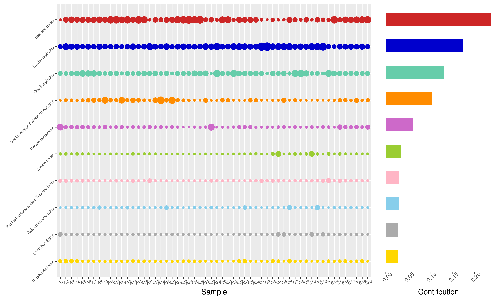
Figure 4.18 Variance Contribution of Simper
Note: The top 10 species in terms of contribution were selected for the graph. The vertical axis represents the species, the horizontal axis is the sample, the bubble size represents the relative abundance of the species, and the Contribution is the contribution of the species in the two groups of variability.
Results directory:
Simper result: result/06.StatisticalTest/simper
4.5.5 T-test
T-test is performed to determine species with significant variation between groups (p-value < 0.05) at various taxon ranks including phylum, class, order, family, genus, and species. The result is shown in the figure as follow:

Figure 4.19 Between-group T-test analysis
Notes: The left panel is the abundance of species showing significant differences between groups. Each bar represents the mean value of the abundance in each group of the specie showing significant differences between groups. The right panel is the confidential interval of between-group variations. The left-most part of each circle stands for the lower limit of 95% confidential interval, while the right-most part is the upper limit. The center of the circle stands for the difference in the mean value. The color of the circle is in agreement with the group whose mean value is higher. The right-most value is the p-value of the significance test of between-group variation.
The following is the resulting volcano plot, which by default shows the results at the same classification level as the above figure:
Figure 4.20 Volcano plot
A volcano plot is a presentation of a scatter plot, which usually consists of several parts, including significantly up-regulated difference species and significantly down-regulated difference species. Generally, the horizontal axis is the fold difference of the difference species in the comparison group, while the vertical axis is the p-value of the significant between-group difference test for the difference species. Each point in the graph represents a differential species, where Up represents the higher abundance of that differential species in the first comparison group than in the second comparison group, while Down is the opposite.
Results directory:
Analysis result: result/06.StatisticalTest/ttest/*/*/*/*.(xls,png,pdf)
Significantly different results: result/06.StatisticalTest/ttest/*/*/*/boxplot
4.5.6 MetagenomeSeq
The metagenomeSeq method was used to test the hypothesis of species richness data between groups to obtain the p value, and the species with significant differences between groups were screened according to the p value (<0.05), and the abundance distribution box chart of different species among groups was drawn. The default display of results for phylum or genus levels is as follows:
Figure 4.21 MetagenomeSeq analysis between groups
Notes: Plotted by relative abundance on the Y-axis and the group name on the X-axis. Horizontal line represents the two groups with significant variation. Each point represents a sample, and box charts of different colors represent different groups. There are only a maximum of nine images in the displayed results, and the rest can be found in the result folder.
Results directory:
Analysis result: result/06.StatisticalTest/metagenomeSeq/*/*/*/*.(xls,png,pdf)
Significantly different results: result/06.StatisticalTest/metagenomeSeq/*/*/*/boxplot
4.5.7 LEfSe
LEfSe (linear discriminant analysis (LDA) Effect Size) was used to analyze and detect biomarkers (Segata et al., 2011).
LEfSe is a software designed to discover high-dimensional biomarkers and reveal metagenomic characteristics (including genes, metabolites or taxa), so it can be used to distinguish two or more biological classes. It emphasizes statistical significance, biological consistency, and effect correlation, and allows researchers to identify characteristics of abundance and related classes. The result was composed of a histogram of LDA scores and the Cladogram among groups. The histogram of the LDA scores and Cladogram are shown as the results of LEfSe analysis for evaluating of biomarkers with statistically difference among groups. The results are as follow:


Figure 4.22 Histogram of LDA scores
Notes: The histogram of the LDA scores represents species(biomarker) whose abundance shows significant differences among groups. The selecting criteria is that LDA scores are larger than the set threshold (4 set by default).
The length of each bin, namely, the LDA score, represents the effect size (the extent to which a biomarker can explain the differentiating phenotypes among groups).
If a group in the figure is missing, it indicates that there is no species with significant difference in this group.
The names of species represented by English letters in the figure are shown in the legend on the right.

Figure 4.23 Cladogram
Notes: In Cladogram, circles radiating from inner side to outer side represents taxonomic rank from phylum to genus (species). Each circle stands for a distinct taxon at corresponding taxonomic rank. The diameter of each circle represents proportionally the relative abundance of each taxon. Yellow stands for taxons with non-significant differences."
Taxons (biomarkers) with significant differences are colored according to corresponding group’s color. Red nodes mean these microbiota contributes a lot in the group covered by red color, so do the green nodes. Letters above the circles and corresponding species are annotated on the right side.
If a group in the figure is missing, it indicates that there is no species with significant difference in this group.
The names of species represented by English letters in the figure are shown in the legend on the right.
Results directory:
LEfSe cladogram: result/06.StatisticalTest/lefse/*/*/*.(res,png,pdf)
Show Q&A
Q：Details of significance test of inter-group community structure variability
(1) Anosim (Analysis of similarities) is a non parametric test method. It first calculates the relationship (or similarity) between samples through variables, then calculates the relationship ranking, and finally determines whether the difference between groups is significantly different from the difference within groups through ranking for replacement test. This test has two important values, one is the p value, which can judge whether the comparison between groups and within groups is significant. The other is the R value, which can be used to determine the difference between groups and within groups. Anosim is used to test whether the difference between groups is significantly greater than the difference within groups, so as to judge whether grouping is meaningful. The specific calculation process: https://www.cnblogs.com/ZhengAbel/p/12016362.html.
(2) MRPP analysis is similar to Anosim, but MRPP is based on the Bray-Curtis parametric test for analyzing whether differences in microbial community structure between groups are significant, and is usually used in conjunction with downscaled plots such as PCA, PCoA, and NMDS. The specific calculation process: https://www.rdocumentation.org/packages/Blossom/versions/1.4/topics/mrpp.
(3) ADONIS (permanent MANOVA), also known as nonparametric MANOVA, is a non parametric multivariate ANOVA method based on distance matrix (such as Bray Curtis, Euclidean, etc.). The adonis in the report is Permanova. In addition, Adonis analysis can also help determine whether the community differences between groups are significant.
Q: In Anosim and MRPP analysis, all pairwise comparison P values returned from the two kinds of analysis are 0.1, but it can be clearly seen from the PCoA diagram that they are obviously separated. How to explain this phenomenon?
For Anosim and MRPP, the sample size should be large (more than 10, the more the better). The failure to reach a significant level may be caused by the following two reasons: 1. Even though the dimension reduction map score is relatively open, it does not reach a significant level. 2. For the case that there are only three samples in each group, because the sample size is too small, its internal algorithm is difficult to find the case with significant difference (p<=0.05)
Q: How to explain that the R value is greater than 0 and the p value is greater than 0.05 in Anosim analysis ?
Anosim analysis is to get the R value first. If the R value is greater than 0, the difference between the groups is large, but only the R value is not enough to indicate the difference between the two groups. There is also a need for a p value. If the p value is greater than 0.05, the result that the R value is greater than 0 has no credibility.
Q: Methods for comparing the differences of community structure composition among groups
If you want to get the difference of community structure composition between different treatments, you can use MetagenomeSeq analysis to extract the species information with significant difference between groups. You can also use the distance matrix between groups as input to conduct Anosim analysis. The result is a value similar to p-value, which can be used to judge whether there is significant difference between groups.
Q:Interpretation of the results of MetagenomeSeq analysis of significant differences between groups
We will provide the analysis results of significant differences between groups at the level of phylum, class, order, family, genus and species.
Note: We used MetagenomeSeq (http://cbcb.umd.edu/software/metagenomeSeq) software to obtain p-values by hypothesis testing of species abundance data between groups, and q-values by correcting for p-values. Finally, the species with significant differences were screened according to p or q values.
*.psig.xls is the species selected for significant differences between groups (|logFC|>1 and P <0.05).
Table description: Taxo is species classification information.logFC: log-fold-changes between each pair of groups(the value is calculated internally by the software); se: Standard Error; pvalues: P value; adjPvalues: q value (adjust p-value).
Interpretation of the results of LEfSe
Q: LEfSe software parameter setting
The default setting of the LDA score in the lefse software is 2. The size of the LDA score represents the size of the effect of the difference species, and anything with an LDA score greater than 2 is a plausible difference species, and the larger the value, the greater the effect of the difference species. In the literature, the LDA score is set to 2, 3, or 4. We used the LDA score of 4 because it is more stringent than 2. However, if the difference between the teacher's sample groups is not very large and the number of species found to be different is small, which is not enough to meet the analysis requirements, we can lower the LDA score to do so in order to find more species that are different.
Q: Specific content description of lefse.res document
There is an LDA.1.res file in the lefse result file, which is the default output format of lefse. The output: *.res format file contains the following two lines.
Bacteria.Firmicutes.Clostridia.Clostridiales.Ruminococcaceae 5.0923016841 Low_O2 4.74694106197 2.91304680962e-07Bacteria.Tenericutes.Mollicutes.Mycoplasmatales.Mycoplasmataceae.Mycoplasma2.55257491798
There are 5 columns: the first column is the name of the biomarker, the second column is the value of log10 with the highest mean abundance, if the mean abundance is less than 10 it is calculated as 10, the third column is the name of the group of differential genes or species enrichment, the fourth column is the LDA value, the fifth column is the p-value of Kruskal-Wallis rank sum test, and if it is not a biomarker it is indicated by "-" indicates .
Q: The grouping colors in LEfSe evolutionary branching graph and LDA column graph are less than the number of mapping groups.
In the display results of LEfSe, all display species have significant differences among all groups. The coloring principle of these species is: in which group is enriched (in which group is the highest in abundance), the color of this group is displayed. Therefore, if a specific group does not have the current display diagram, The reason is that the abundance of all species with significant differences between these groups in this group is low or non-existent (that is, these species are not enriched in this group).
Q: Interpretation of abundance comparison chart of different species in different groups in LEfSe analysis
For example:
The abundance distribution of different groups was set to 1 in the sample with the highest abundance, and the abundance of this differential species in other groups was the relative value relative to the group with the highest abundance.
Meaning of the solid and dashed lines in the graph: the solid and dashed lines indicate the mean and median values of the relative abundance of each sample in the grouping, respectively.
If there is no column in a group, it means that there is no such species of interest in the group.
Q: What is the meaning of the classification name at the top of the fan in the Cladogram
The classification names in the Cladogram (such as Actinobacteria) represent the consistency of the variation trend of statistical and biological grouping differences. Each leaf node in the figure corresponds to a species, and the diameter of its circle at each leaf node is proportional to the corresponding species abundance. The coloring of differences is based on the grouping of species with high abundance. If the change trend of the leaf node of the lower level classification level is the same as that of the ancestor branch of the upper level in different groups, the corresponding upper level classification name will be marked in the figure to get some representative differential classification information.
Q: What information can be obtained from the LDA.Cladogram?
In the LDA.Cladogram diagram, the circle radiating from inside to outside represents the classification level from Phylum to Genus (or Species). Each small circle at different classification levels represents a classification at that level. The diameter of the small circle is proportional to the relative abundance. Coloring principle: the species without significant differences are uniformly colored in yellow, and the different species Biomarker follows the group to color. The red node represents the microbial group that plays an important role in the red group, and the green node represents the microbial group that plays an important role in the green group.
Q: Why is the number of species in LDA.Cladogram different from that in LDA.Histogram ?
The LDA.Cladogram only shows the species of class, order and family, while the LDA.Histogram shows all the species with significant differences.
Q：What is the difference between LEfSe (LDA Effect Size) and MetagenomeSeq? How to explain the case of few biomakers?
Lefse and MetagenomeSeq are two different presentation forms. Their results are very different because of their different algorithms, and Lefse is a multi group analysis, while MetagenomeSeq is a comparison between two groups.
Lefse algorithm: firstly, use nonparametric factorial Kruskal Wallis (KW) sum rank test (t nonparametric factor Kruskal Wallis and rank test) to detect species with significant difference in abundance between different groups, then use the grouped Wilcoxon rank sum test to judge the difference between groups, and finally use linear discriminant analysis (LDA) to reduce the dimension and evaluate the impact of species with significant difference (i.e. LDA Score).
MetagenomeSeq algorithm: firstly, hypothesis test is carried out on the species abundance data between groups to obtain the p value, and the corrected q value is obtained by correcting the p value. Finally, the species with significant differences were screened according to p or q values. The significance analysis of species difference among groups was conducted at 6 levels of phylum, class, order, family, genus and species, and the species with significant difference were obtained at different levels.
So if you want to see the different species between two groups, you can refer to the MetagenomeSeq results. If you want to see multiple groups together, you can refer to lefse.
The reason why Biomakers are rare is that on the one hand, our Lefse score values are strictly set, which is 4 by default and 2 by default for Lefse software. On the other hand, it may be that there is no significant difference among species.
Interpretation of the results of MetagenomeSeq analysis
Q: In the MetagenomeSeq analysis, q<=0.05 of the family (genus, order or species) is null? Did not do it or did not meet the conditions? If MetagenomeSeq analysis p<=0.05, several biomarkers are selected, but q<=0.05 does not, what does it mean?
Biomarker screening method: Perform a difference analysis on the species abundance data between groups, using | logFC |>1 and P value<0.05 as the threshold for significant difference screening, in order to identify microbial species with significant differences between the two groups of samples, obtain the p-value, and correct the p-value to obtain the corrected q value. Finally, select species with significant differences based on the p-value or q value. For the case that q<=0.05 is empty, we did not screen the eligible species according to the conditions.
In addition, since P value is the p value of hypothesis test, Q value is the q value corrected by p value. Strictly speaking, the screening condition of q value is more strict than that of p value, but if there are fewer species screened by q value, the analysis can be conducted according to p value.
In the statistical analysis of species difference between groups, tow different statistical methods, T-test and LEfSe, were used, with different results.
As the tow statistical analysis methods use different statistical test methods, it is normal if the results are different. Among them, T-test uses t-test, while LEfSe uses rank sum test and linear discriminant analysis (LDA), so the screening results of the three statistical analysis methods are reliable, and you can choose the most consistent analysis results according to your own research background.
A summary of the problems involved in t-test analysis
Q: The t-test is required to meet the normal distribution, but we did not test whether the data meet the normal distribution in the process.
The t-test is divided into independent sample t-test (unmatched) and dependent sample t-test (paired), and the results of independent sample t-test are given by default in our process. The analysis result is to use the statistical method of t test to find out which two groups have significant differences in the variables of interest (mean value). Of course, we can verify the normality of the data before doing the t-test. If it conforms to the normal distribution, these verifications in turn enhance our confidence in the results obtained (refer to the book, R in Action Chapter 7 Basic Statistical Analysis and Chapter 9 Analysis of Variance).
Q: Tukey and Kruskal-Wallis, the difference between the two analysis methods. Which is more referential in the case of multiple groups ?
These two kinds of analysis are both two comparison methods, which can give significance test. Tukey is a parameter test, and the data should conform to normal distribution. Wilcox is a non parametric test, which does not require whether the data conform to the normal distribution, so the latter is more general. The result file should be the data obtained based on these two tests. The subsequent use method for the two groups of data is: if there are only two groups, T-test and wilcox test are selected. If there are more than two groups, Tukey test and the kruskal test of agricolae package are selected.
Q: The difference of *psig.xls and *qsig.xls ？
One is the result of significant p value, and the other is the result of significant q value by correcting p value.
Q: Is the result of the picture in the t-test based on the p value or the q value ?
When mapping according to the significant p value, the results that the group mean abundance is less than 0.001 (the default value is 0.001) are filtered out. Therefore, the results shown in the figure may be less than those in psig.xls
Q: How to get q value by p value correction?
The method is: Benjamini and Hochberg False Discovery Rate. The correction process of this method for p value is as follows:
Here is how it works:
1) The p-values of each gene are ranked from the smallest to the largest.
2) The largest p-value remains as it is.
3) The second largest p-value is multiplied by the total number of genes in gene
list divided by its rank. If less than 0.05, it is significant.
Corrected p-value = p-value*(n/n-1) < 0.05, if so, gene is significant.
4) The third p-value is multiplied as in step 3:
Corrected p-value = p-value*(n/n-2) < 0.05, if so, gene is significant.
And so on.
Q: In the result chart on the right, the explanation of the confidence interval.
The color of the center circle is the same as that of the group with large mean value. The left side of the vertical dotted line indicates that the mean difference is negative, and the right side of the vertical dotted line indicates that the mean difference is positive. The analysis on the right part of the whole graph is the interval estimation of the difference between the mean values of the two groups of data. The default significance level is α= 0.05, a horizontal dotted line represents that the probability of the mean difference falling within the range of this interval is 95%. The greater the interval change, the greater the possibility of the mean difference fluctuation, and to some extent, the poor repeatability of the data within the group.
Q: Why does T test show that species have differences between groups (p<0.05), but it is not shown?
Because T test mapping needs to meet two conditions: p_value is less than 0.05, and the average abundance of species among groups is greater than 0.001. If the p value of two species in the sample is less than 0.05, but their abundance in each group is less than 0.001, there is no figure for this part.
4.6 Function Prediction
4.6.1 PICRUSt2
PICRUSt2 is a bioinformatics software package for metagenomic function prediction based on marker gene (such as 16S rRNA). For detailed prediction process, please refer to the description on the webpage (see details: https://github.com/picrust/picrust2/wik ). At present, function prediction can be carried out according to 16S sequencing data based on KEGG, COG, PFAM, TIGRFAM, MetaCyc databases.
4.6.2 PICRUSt2 Clustering of Function Abundance
Based on the annotation results of the database, the top 10 functional information of each sample or subgroup in terms of maximum abundance at each annotation level are selected to generate a functional relative abundance bar stack chart, so as to visually view the functions with higher relative abundance and their proportions at different annotation levels for each sample. The KO database relative abundance bar chart is shown as an example as follows:
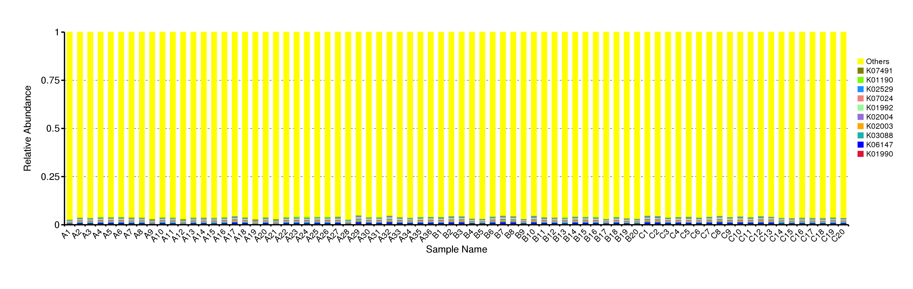
Figure 4.24 Bar plot of PICRUSt2 Function Annotation
To view full size picture please click here
Notes: Y-axis represents "Relative Abundance" and X-axis represents "Samples Name". "Others" represents a total relative abundance of the rest phyla besides the top 10 phyla.
Results directory:
Analysis result: result/05.FunctionPrediction/picrust2/barplot
4.6.3 PICRUSt2 Relative abundance of function annotation
According to the function annotation and abundance information of samples for different databases, the top 35 abundance of functions and their abundance information in each sample are selected to draw the heatmap, and clustered at different functional levels. Here, only the prediction results of KO database are shown:

Figure 4.25 Heatmap of PICRUSt2 Function Annotation
To view full size picture please click here
Note: X-axis represents the sample name and the Y-axis represents the function annotation. The cluster tree on the left side of the figure is the function cluster tree; the corresponding value of the heatmap is the Z value of function relative abundance after standardization, that is, the Z value of a sample in a certain function is the differences between the relative abundance of the sample in the function and the average relative abundance of all samples in the function divided by the standard deviation of all samples in the function.
Results directory:
Cluster map of function abundance for different databases: result/05.FunctionPrediction/picrust2/heatmap
4.6.4 Venn/Flower Diagram of Function Annotation
In order to investigate the distribution of function number among samples (groups), the common and unique functions among different samples (groups) were analyzed and the Venn/Flower diagram was drawn. Here, only the prediction results of KO database are shown:
Figure 4.26 Venn Diagram of PICRUSt2 Results
To view full size picture please click here
Note: each circle in the figure represents a sample (group), the number in the overlap of circles represents the number of common functions between samples (groups), and the number without overlapping parts represents the number of unique functions of the sample (group).
Results directory:
Analysis results: result/08.FunctionPrediction/picrust2/venn/*/*/*/*.(png,svg)
Plotting data: result/08.FunctionPrediction/picrust2/venn/*/*/*/*.txt
Figure 4.27 Flower Diagram of PICRUSt2 Results
To view full size picture please click here
Notes: In the flower, each petal represents one (group) sample, different colors represent different samples (groups), the middle core number represents the number of feature sequences shared by all samples, and the number on the petal represents the number of feature sequences unique to this sample (group).
Results directory:
Analysis results: result/08.FunctionPrediction/picrust2/flower/*/*/*/*.(png,svg)
Plotting data: result/08.FunctionPrediction/picrust2/flower/*/*/*/*.txt
4.6.5 T-test of Function Annotation
T-test was used to test the functional differences between different groups. Here, only the prediction results of KO database are shown:
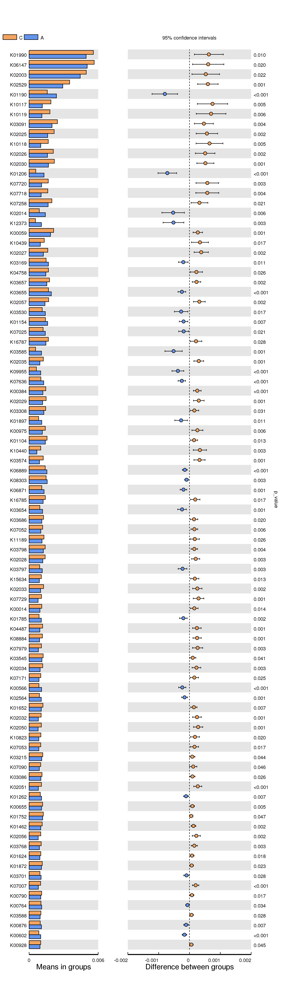
Figure 4.28 T-test Analysis of Functional Differences between Groups
Note: the left figure shows the functional abundance differences between groups, and each bar in the figure represents the average abundance of the function in different groups; the right figure shows the confidence of inter-groups differences. The leftmost point of each circle in the figure represents the lower limit of 95% confidence interval, and the rightmost point of the circle represents the upper limit of 95% confidence interval. The center of the circle represents the differences of the mean value, and the color of the circle represents the P value of differences significance test between groups of the corresponding functions.
The volcano diagram is as follows:
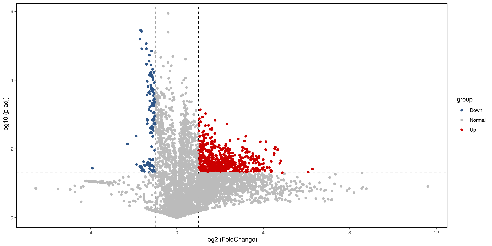
Figure 4.29 Volcano Map
Note: volcano map is a form of scatter diagram, which is usually composed of several parts: significantly up regulating function and significantly down regulating function. Generally, the X-axis is the multiple differences of the functions with differences between groups, while the Y-axis is the P-value of significance test. Each point in the figure represents a function with differences, where 'Up' represents that the abundance of the function with differences in the first comparison group is higher than that in the second, while 'Down' represents the opposite.
Results directory:
Analysis results: result/08.FunctionPrediction/picrust2/ttest/*/*/*/*/*.(xls,pdf,png)
Species with significant differences: result/08.FunctionPrediction/picrust2/ttest/*/*/*/*/boxplot
Notes: boxplot is based on p<0.05 was used to screen the functions with significant differences, and top50 was selected for drawing according to the order of abundance.
4.6.6 Tax4Fun Function Prediction
Tax4Fun is an R program package based on the 16S Silva database for functional prediction of intestinal, soil and other environmental samples. The prediction accuracy is high, and the experimental results show that it is better than PICRUSt function prediction, especially suitable for soil and other complex environmental samples. Tax4Fun Function prediction is realized by the nearest neighbor method based on the minimum 16S rRNA sequence similarity. The specific method is to extract the whole genome 16S rRNA gene sequence of prokaryotes in KEGG database and use BLASTN algorithm to compare it to SILVA SSU Ref NR database (BLAST bitscore>1500) to establish a correlation matrix. The whole genome functional information of KEGG database annotated by UProC and PAUDA methods is mapped to SILVA database to realize functional annotation of SILVA database. Sequencing samples use SILVA database sequence as reference sequence to cluster OTUs, and then obtain functional annotation information.
4.6.7 Clustering of Function Abundance
Based on the annotation results of the database, the top 10 functional information of each sample or subgroup in terms of maximum abundance at each annotation level are selected to generate a functional relative abundance bar stack chart, so as to visually view the functions with higher relative abundance and their proportions at different annotation levels for each sample. The relative abundance bar chart of Level1 is shown as an example as follows:
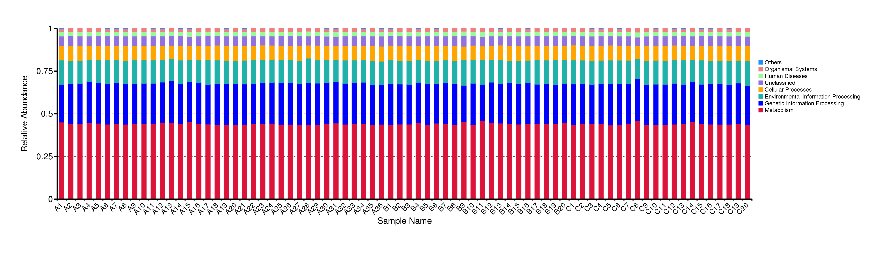
Figure 4.30 Bar plot of Tax4Fun Function Annotation
To view full size picture please click here
Notes: Y-axis represents "Relative Abundance" and X-axis represents "Samples Name". "Others" represents a total relative abundance of the rest phyla besides the top 10 phyla.
Results directory:
Analysis result: result/08.FunctionPrediction/tax4fun/barplot
4.6.8 Tax4Fun Relative abundance of function annotation
According to the function annotation and abundance information of samples for different databases, the top 35 abundance of functions and their abundance information in each sample are selected to draw the heatmap, and clustered at different functional levels. Here, only the prediction results of Level1 database are shown:

Figure 4.31 Heatmap of Tax4Fun Function Annotation
To view full size picture please click here
Note: X-axis represents the sample name and the Y-axis represents the function annotation. The cluster tree on the left side of the figure is the function cluster tree; the corresponding value of the heatmap is the Z value of function relative abundance after standardization, that is, the Z value of a sample in a certain function is the differences between the relative abundance of the sample in the function and the average relative abundance of all samples in the function divided by the standard deviation of all samples in the function.
Results directory:
Analysis result: result/08.FunctionPrediction/tax4fun/heatmap
4.6.9 PCA Analysis of Tax4Fun Function Annotation
Principal component analysis (PCA) dimensionality reduction analysis was conducted based on the abundance statistical results of functional annotation for the database. The more similar the composition of function among the samples are, the closer the distance of their corresponding data points on the PCA graph are.
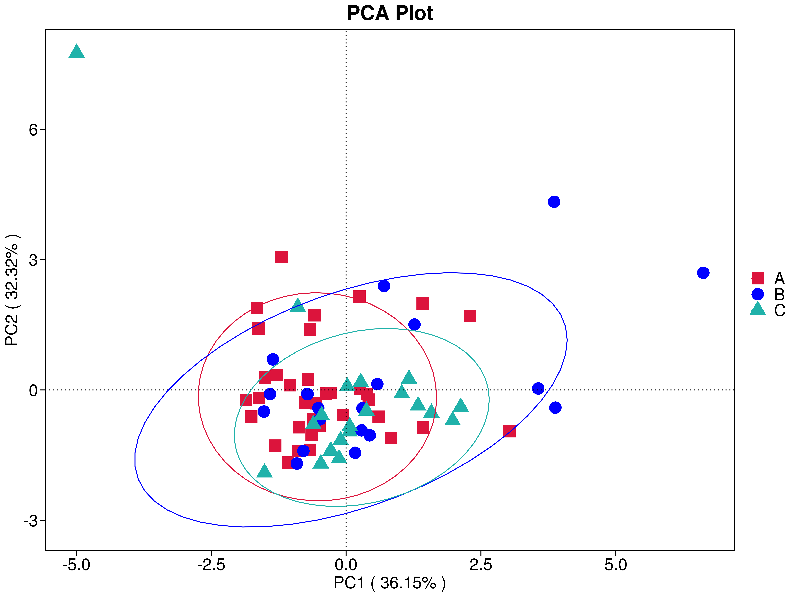
Figure 4.32 PCA Result of Tax4Fun Function Annotation
To view full size picture please click here
Note: The X-axis represents the first principal component, and the percentage represents the contribution value of the first principal component to the function differences; the Y-axis represents the second principal component, and the percentage represents the contribution value of the second principal component to the function differences; each point in the graph represents a sample, and the samples in the same group are represented by the same color.
Results directory:
Analysis result: result/08.FunctionPrediction/tax4fun/pca/*/*/*.(png,pdf)
4.6.10 Venn/Flower Diagram of Tax4Fun Function Annotation
In order to investigate the distribution of function number among samples (groups), the common and unique functions among different samples (groups) were analyzed and the Venn/Flower diagram was drawn. The results are as follow:

Figure 4.33 Venn Diagram of Tax4Fun Results
To view full size picture please click here
Note: each circle in the figure represents a sample (group), the number in the overlap of circles represents the number of common functions between samples (groups), and the number without overlapping parts represents the number of unique functions of the sample (group).
Results directory:
Analysis result: result/08.FunctionPrediction/tax4fun/venn/*/*/*.(png,svg)
Plotting data: result/08.FunctionPrediction/tax4fun/venn/*/*/*.txt
Figure 4.34 Flower Diagram of Tax4Fun Results
To view full size picture please click here
Notes: In the flower, each petal represents one (group) sample, different colors represent different samples (groups), the middle core number represents the number of feature sequences shared by all samples, and the number on the petal represents the number of feature sequences unique to this sample (group).
Results directory:
Analysis result: result/08.FunctionPrediction/tax4fun/flower/*/*/*.(png,svg)
Plotting data: result/08.FunctionPrediction/tax4fun/flower/*/*/*.txt
4.6.11 T-test of Tax4Fun Function Annotation
T-test was used to test the functional differences between different groups. Here, only the prediction results of level3 database are shown:
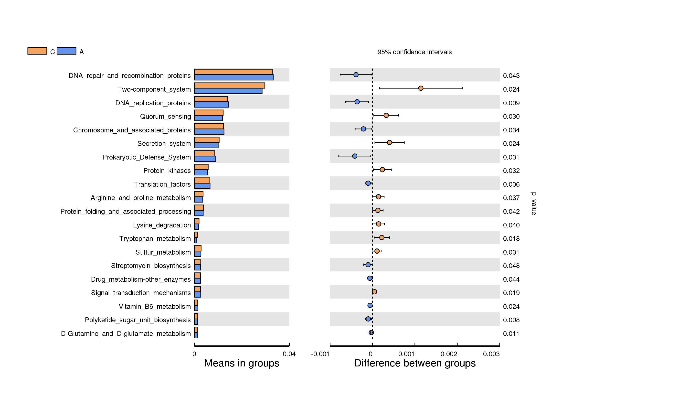
Figure 4.35 T-test Analysis of Functional Differences between Groups
Notes: The left panel is the abundance of species showing significant differences between groups. Each bar represents the mean value of the abundance in each group of the specie showing significant differences between groups. The right panel is the confidential interval of between-group variations. The left-most part of each circle stands for the lower limit of 95% confidential interval, while the right-most part is the upper limit. The center of the circle stands for the difference in the mean value. The color of the circle is in agreement with the group whose mean value is higher. The right-most value is the p-value of the significance test of between-group variation.
The volcano diagram is as follows:
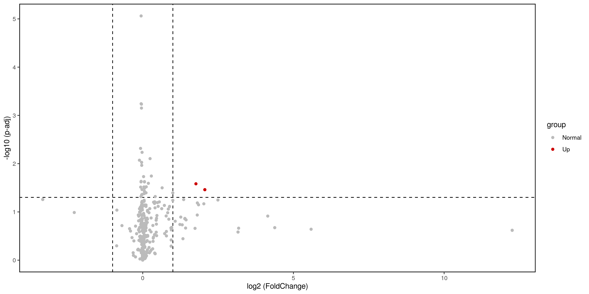
Figure 4.36 Volcano Map
Note: volcano map is a form of scatter diagram, which is usually composed of several parts: significantly up regulating function and significantly down regulating function. Generally, the X-axis is the multiple differences of the functions with differences between groups, while the Y-axis is the P-value of significance test. Each point in the figure represents a function with differences, where 'Up' represents that the abundance of the function with differences in the first comparison group is higher than that in the second, while 'Down' represents the opposite.
Results directory:
Analysis result: result/08.FunctionPrediction/tax4fun/ttest/*/*/*/*/.(xls,pdf,png)
Function with significant differences: result/08.FunctionPrediction/tax4fun/ttest/*/*/*/*/boxplot
Notes: boxplot is based on p<0.05 was used to screen the functions with significant differences, and top50 was selected for drawing according to the order of abundance.
4.6.12 PICRUSt Function Prediction
PICRUSt is a bioinformatics software package for predicting metagenomic functions based on Marker genes (such as 16S rRNA). At present, function prediction based on KEGG database can be conducted according to 16S sequencing data.
4.6.13 Clustering of PICRUSt Function Abundance
Based on the annotation results of the database, the top 10 functional information of each sample or subgroup in terms of maximum abundance at each annotation level are selected to generate a functional relative abundance bar stack chart, so as to visually view the functions with higher relative abundance and their proportions at different annotation levels for each sample. The relative abundance bar chart of Level1 is shown as an example as follows:
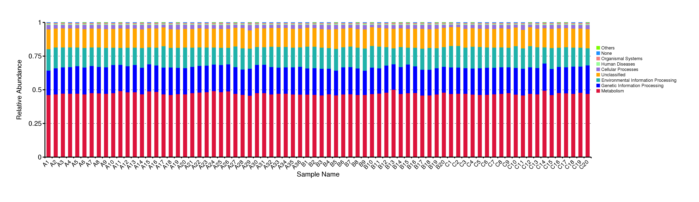
Figure 4.37 Bar plot of PICRUSt Function Annotation
To view full size picture please click here
Notes: Y-axis represents "Relative Abundance" and X-axis represents "Samples Name". "Others" represents a total relative abundance of the rest phyla besides the top 10 phyla.
Results directory:
Analysis result: result/08.FunctionPrediction/picrust/barplot
4.6.14 PICRUSt Relative abundance of function annotation
According to the function annotation and abundance information of samples for different databases, the top 35 abundance of functions and their abundance information in each sample are selected to draw the heatmap, and clustered at different functional levels. Here, only the prediction results of Level1 database are shown:

Figure 4.38 Heatmap of PICRUSt Function Annotation
To view full size picture please click here
Note: X-axis represents the sample name and the Y-axis represents the function annotation. The cluster tree on the left side of the figure is the function cluster tree; the corresponding value of the heatmap is the Z value of function relative abundance after standardization, that is, the Z value of a sample in a certain function is the differences between the relative abundance of the sample in the function and the average relative abundance of all samples in the function divided by the standard deviation of all samples in the function.
Results directory:
Analysis result: result/08.FunctionPrediction/picrust/heatmap
4.6.15 PCA Analysis of PICRUSt Function Annotation
Principal component analysis (PCA) dimensionality reduction analysis was conducted based on the abundance statistical results of functional annotation for the database. If the functional composition of the samples is more similar, the distance between them in the dimension reduction diagram is closer:
Figure 4.39 PCA Result of PICRUSt Function Annotation
To view full size picture please click here
Note: The X-axis represents the first principal component, and the percentage represents the contribution value of the first principal component to the function differences; the Y-axis represents the second principal component, and the percentage represents the contribution value of the second principal component to the function differences; each point in the graph represents a sample, and the samples in the same group are represented by the same color.
Results directory:
Analysis result: result/08.FunctionPrediction/picrust/pca/*/*/*.(png,pdf)
4.6.16 Venn/Flower Diagram of PICRUSt Function Annotation
In order to investigate the distribution of function number among samples (groups), the common and unique functions among different samples (groups) were analyzed and the Venn/Flower diagram was drawn. The results are as follow:
Figure 4.40 Venn Diagram of PICRUSt Results
To view full size picture please click here
Note: each circle in the figure represents a sample (group), the number in the overlap of circles represents the number of common functions between samples (groups), and the number without overlapping parts represents the number of unique functions of the sample (group).
Results directory:
Analysis result: result/08.FunctionPrediction/picrust/venn/*/*/*.(png,svg)
Plotting data: result/08.FunctionPrediction/picrust/venn/*/*/*.txt
Figure 4.41 Flower Diagram of PICRUSt Results
To view full size picture please click here
Notes: In the flower, each petal represents one (group) sample, different colors represent different samples (groups), the middle core number represents the number of feature sequences shared by all samples, and the number on the petal represents the number of feature sequences unique to this sample (group).
Results directory:
Analysis result: result/08.FunctionPrediction/picrust/flower/*/*/*.(png,svg)
Plotting data: result/08.FunctionPrediction/picrust/flower/*/*/*.txt
4.6.17 T-test of PICRUSt Function Annotation
T-test was used to test the functional differences between different groups. Here, only the prediction results of Level3 database are shown:
Figure 4.42 T-test Analysis of Functional Differences between Groups
Notes: The left panel is the abundance of species showing significant differences between groups. Each bar represents the mean value of the abundance in each group of the specie showing significant differences between groups. The right panel is the confidential interval of between-group variations. The left-most part of each circle stands for the lower limit of 95% confidential interval, while the right-most part is the upper limit. The center of the circle stands for the difference in the mean value. The color of the circle is in agreement with the group whose mean value is higher. The right-most value is the p-value of the significance test of between-group variation.
The volcano diagram is as follows:
Figure 4.43 Volcano Map
Note: volcano map is a form of scatter diagram, which is usually composed of several parts: significantly up regulating function and significantly down regulating function. Generally, the X-axis is the multiple differences of the functions with differences between groups, while the Y-axis is the P-value of significance test. Each point in the figure represents a function with differences, where 'Up' represents that the abundance of the function with differences in the first comparison group is higher than that in the second, while 'Down' represents the opposite.
Results directory:
Analysis result: result/08.FunctionPrediction/picrust/ttest/*/*/*.(xls,pdf,png)
Function with significant differences: result/08.FunctionPrediction/picrust/ttest/*/*/*/boxplot
Notes: boxplot is based on p<0.05 was used to screen the functions with significant differences, and top50 was selected for drawing according to the order of abundance.
4.6.18 BugBase Function Prediction
BugBase is a widely used tool for predicting high level phenotypes of 16S microorganisms since 2016. In addition to phenotypic prediction, this tool can also perform inter group difference analysis for different phenotypes, and display statistical charts. At present, microbial communities can be classified according to seven types of phenotypes: Gram Positive, Gram Negative, Biofilm Forming, Pathogenic, Mobile Element Containing, Oxygen Utilization, including Aerobic, Anaerobic, and Cultivably Yanaerobic, and Oxidative Stress Tolerance.
4.6.19 Phenotypic abundance display for BugBase
According to the phenotype prediction results, obtain the phenotype prediction results of each taxon. When drawing a stacked column chart of a phenotype, select the taxon whose phenotype prediction result is "positive", and obtain the species annotation results of the selected taxon. Set an abundance value (find out the bacteria phyla with the highest abundance in all samples or groups and divide its abundance by 10). Other gates with abundance less than this value are classified as "Other". Finally, the abundance column between samples and groups was drawn.

Figure 4.44 Bar plot of Aerobic
Notes: The abscissa (Sample Name) is the sample name. The ordinate (Relative Abundance) indicates the relative abundance.
Results directory:
Analysis result: result/08.FunctionPrediction/bugbase/BugBase_result/otu_contributions/; Including (Aerobic、Anaerobic、Contains_Mobile_Elements、Facultatively_Anaerobic、Forms_Biofilms、Gram_Negative、Gram_Positive、Potentially_Pathogenic、Stress_Tolerant) results of 9 phenotypes.
4.6.20 Analysis of phenotypic abundance for BugBase
In the analysis of phenotypic abundance difference between groups, the box chart can directly reflect the median, dispersion, maximum, minimum and abnormal values of species diversity within the group (please refer to the box chart for the interpretation of the box chart). In addition to the inter group comparison box chart of each phenotype, the predicted_phenotypes folder also contains the inter group difference test statistical results of each phenotype (* _stats. txt). The difference test includes Pairwise Mann Whitney Wilcoxon Tests between any two groups, p-values corrected by FDR, and Kruskal Wallis Test results between multiple groups. Taking Aerobic and Anaerobic indexes as an example, the box chart of the difference analysis between groups is as follows:

Figure 4.45 Box Chart of Aerobic Index
Results directory:
The box chart of the differences among the nine phenotypes and the results of the difference significance test: result/08.FunctionPrediction/bugbase/BugBase_result/predicted_phenotypes:
4.6.21 FAPROTAX Function Prediction
FAPROTAX software has built a functional classification database based on species information. The current version, based on reference evidence, contains more than 80 functional classifications of carbon, nitrogen, phosphorus, sulfur and other elements, animal and plant pathogens, methane generation, and fermentation, covering more than 4600 different prokaryotic species, and has a good prediction effect on the biochemical cycle process of environmental samples.
4.6.22 Clustering of FAPROTAX Function Abundance
According to the database annotation results, the abundance information of each sample is counted, and the results are shown as follows:
Figure 4.46 Bar plot of FAPROTAX Function Annotation
Notes: Y-axis represents "Relative Abundance" and X-axis represents "Samples Name". "Others" represents a total relative abundance of the rest phyla besides the top 10 phyla.
Results directory:
Analysis result: result/08.FunctionPrediction/faprotax/barplot
According to the function annotation and abundance information of samples for different databases, the top 35 abundance of functions and their abundance information in each sample are selected to draw the heatmap, and clustered at different functional levels.

Figure 4.47 Heatmap of FAPROTAX Function Annotation
Results directory:
Heatmap of function abundance: result/08.FunctionPrediction/faprotax/heatmap
4.6.24 PCA Analysis of FAPROTAX Function Annotation
Principal component analysis (PCA) dimensionality reduction analysis was conducted based on the abundance statistical results of functional annotation for the database
Figure 4.48 PCA Result of FAPROTAX Function Annotation
To view full size picture please click here
Note: The X-axis represents the first principal component, and the percentage represents the contribution value of the first principal component to the function differences; the Y-axis represents the second principal component, and the percentage represents the contribution value of the second principal component to the function differences; each point in the graph represents a sample, and the samples in the same group are represented by the same color.
Results directory:
Results directory: result/08.FunctionPrediction/faprotax/pca/*/*/*.(png,pdf)
4.6.25 Venn/Flower Diagram of FAPROTAX Function Annotation
In order to investigate the distribution of function number among samples (groups), the common and unique functions among different samples (groups) were analyzed and the Venn/Flower diagram was drawn. The results are as follow:
Figure 4.49 Venn Diagram of FAPROTAX Results
To view full size picture please click here
Note: each circle in the figure represents a sample (group), the number in the overlap of circles represents the number of common functions between samples (groups), and the number without overlapping parts represents the number of unique functions of the sample (group).
Results directory:
Analysis result: result/08.FunctionPrediction/faprotax/venn/*/*/*.(png,svg)
Plotting data: result/08.FunctionPrediction/faprotax/venn/*/*/*.txt
Figure 4.50 Flower Diagram of FAPROTAX Results
To view full size picture please click here
Notes: In the flower, each petal represents one (group) sample, different colors represent different samples (groups), the middle core number represents the number of feature sequences shared by all samples, and the number on the petal represents the number of feature sequences unique to this sample (group).
Results directory:
Analysis result: result/08.FunctionPrediction/faprotax/flower/*/*/*.(png,svg)
Plotting data: result/08.FunctionPrediction/faprotax/flower/*/*/*.txt
4.6.26 T-test of FAPROTAX Function Annotation
T-test was used to test the functional differences between different groups. Here, only the prediction results of one are shown:
Figure 4.51 T-test Analysis of Functional Differences between Groups
Notes: The left panel is the abundance of species showing significant differences between groups. Each bar represents the mean value of the abundance in each group of the specie showing significant differences between groups. The right panel is the confidential interval of between-group variations. The left-most part of each circle stands for the lower limit of 95% confidential interval, while the right-most part is the upper limit. The center of the circle stands for the difference in the mean value. The color of the circle is in agreement with the group whose mean value is higher. The right-most value is the p-value of the significance test of between-group variation.
The volcano diagram is as follows:
Figure 4.52 Volcano Map
Note: volcano map is a form of scatter diagram, which is usually composed of several parts: significantly up regulating function and significantly down regulating function. Generally, the X-axis is the multiple differences of the functions with differences between groups, while the Y-axis is the P-value of significance test. Each point in the figure represents a function with differences, where 'Up' represents that the abundance of the function with differences in the first comparison group is higher than that in the second, while 'Down' represents the opposite.
Results directory:
Analysis result: result/08.FunctionPrediction/faprotax/ttest/*/*/*/*/*.(xls,pdf,png)
Function with significant differences: result/08.FunctionPrediction/faprotax/ttest/*/*/*/*/boxplot
Notes: boxplot is based on p<0.05 was used to screen the functions with significant differences, and top50 was selected for drawing according to the order of abundance.
4.7 Correlation analysis
4.7.1 Network Analysis
The network diagram provides a new perspective for studying of environmental community structure and function of complex microbial environment. The symbiotic relationship of microorganisms varied in different environment. The species network diagram can be used to see the impact of different environmental factors on microbial adaptability, as well as the dominant species and the closely interacting species group in a certain environment. These dominant species and species groups often paly a unique and important role in maintaining the structure and functional stability of the microbial community in the environment (Jiao et al., 2017; Qin et al., 2012).
Correlation coefficient of all samples were calculated by methods of Spearman Correlation Coefficient (SCC) or Pearson Correlation Coefficient (PCC). After filtering (cutoff＝0.6), the table of correlation coefficient was used to generate Network diagram together with species abundance.
Figure 4.53 Network diagram
Note: the node represents the genus, the node size represents the average relative abundance of the genus, the node color of the same phylum is same, the thickness of the line between nodes is positively correlated with the absolute value of the correlation coefficient of the species interaction, and the line color is positively correlated with the positive and negative correlation respectively (red represents positive correlation, blue represents negative correlation).
Results directory: result/07.CorrelationAnalysis/network/
Show Q&A
Q：Network Drawing process and software
Use our script to process and calculate the species correlation, then use dot text language to describe it, and finally use graphviz-2.38.0 software to process it for visual display.
Q：There are more than 100 species listed in the list file of the network diagram, but only dozens of species are shown in the picture. Why?
The species listed in the table have a correlation coefficient of more than 0.6. The mapping process will filter out those edge, node and species with an average relative abundance of less than 0.005%. The Spearman correlation coefficient used in the network diagram is also filtered with P value, and the filtering condition is p<0.05.
4.7.2 Network3D
Dynamic network diagram can more clearly show the relationship between a certain microbial genus and other microorganisms.
Spearman correlation coefficient was calculated for Top 100 microbial genera. Then select the connections whose correlation coefficient is greater than 0.6 or less than - 0.6 and significant (p-value is less than 0.05) as effective connections to draw the network diagram. The results of the web version are displayed in the results:
Figure 4.54 Dynamic network diagram display
Note: This display image is for reference only, and the actual results can be found in the results file. Different nodes represent different genera, node size represents the degree of connectivity of the genus, and the same color represents the same door level (as shown in the figure). The thickness of the connection between nodes is positively correlated with the absolute value of the correlation coefficient of species interaction.
Results directory:
Web display: result/07.CorrelationAnalysis/network3D/sample/netfig/net.html
Draw network diagram data:
Nodes file：result/07.CorrelationAnalysis/network3D/sample/node.xls
Wire file: result/07.CorrelationAnalysis/network3D/sample/edge.xls
4.8 Environmental association analysis
Correlation analysis is a method of statistical evaluation used to study the strength and the direction of a relationship between two, numerically measured, continuous variables.
For studying the relationship between environmental factors and species or species abundance (alpha diversity), Spearman rank correlation and Mantel test analysis are used to test the association between two ranked variables, or one ranked variable and one measurement variable, and calculate the P-value (significance).
4.8.1 Spearman correlation test
Spearman correlation test is usually denoted by rho (Algina et al.,1999). Spearman’s rank correlation coefficient serves as a nonparametric measure of rank linear correlation (the statistical dependence between the ranks of two variables), regardless of the distribution of the variables. Spearman rank correlation has been applied in a wide range.
Spearman rank correlation test was used to test the correlation between environmental factors and species or species abundance (alpha diversity), to obtain the correlation and significant P-value of the two ranking variables. The result shows below:
Figure 4.55 Spearman correlation heatmap
Notes:
Rows: environmental factors; Columns: species; Colored tiles corresponding the coefficient of Spearman rank correlation r value, whose range is from -1 to 1. r<0 negative correlation; r>0 positive correlation; ＊ means significant (p<0.05).
Results directory:
The result of Spearman correlation based on Alpha diversity table, Relative abundance tables in each taxonomic rank can be found: result/09.EnvironmentFactor/spearman/*/correlation.png
4.8.2 Canonical Correspondence Analysis (CCA)/ Redundancy Analysis (RDA)
CCA/RDA (Sheik et al., 2012)mainly focuses on inter-sample relationships or inter-species correlations, the interpretation of the relationships between samples, species, and environmental variables differs to figure out the major driving environmental forces.
CCA/RDA can be considered as the ordination approach based on correspondence analysis, in which the correspondence analysis is combined with multivariate regression analysis. They calculated a regression of the ordination axes on the measured environmental variables, also known as multiple direct gradient analysis. CCA is based on unimodal species–environment relationships, while RDA is based on linear models. The results show below:
Figure 4.56 CCA
Notes: in CCA plot, arrows indicate environmental factors. The length of arrows shows the association between community distribution and species distribution. The longer the arrows, the greater the association, and vice versa. The angle between arrow and ordination axes responds to the association between an environmental factor and ordination axes. The smaller the angle, the greater the association, and vice versa. Relationship of two environmental factors is positive when their included angle is acute, and negative correlation when obtuse angle.
The significance of each environmental factor is tested by envfit function. CCAenvfit table shows the significance analysis results of environmental factors. The results are shown as follows:
Table 4.6 CCAenvfit Analysis
| "" | "CCA1" | "CCA2" | "r2" | "Pr(>r)" |
|---|---|---|---|---|
| "age" | 0.898558027844298 | 0.438854726072952 | 0.471552602079523 | 0.000999500249875062 |
| "bmi" | 0.974076742788525 | -0.22621781353045 | 0.392647314267272 | 0.000499750124937531 |
| "VSS" | -0.752412606271381 | 0.658692090376002 | 0.43920225252603 | 0.000499750124937531 |
Note: The value corresponding to CCA1 and CCA2 is the cosine of the angle between the environment factor arrow and the sorting axis, which represents the correlation between the environment factor and the sorting axis. The r2 is used to measure the degree of correlation between each typical variable. The larger the value of r2, the stronger the predictive ability between two sets of variables, that is, the stronger the correlation between typical variables. The Pr value is an indicator used to determine whether the typical correlation coefficient is significant.
Numerous environmental factors have an effect on microflora. Most of them are correlation. Therefore, only major influencing factors are selected before environmental factor analysis.
VIF (variance inflation factor) analysis (Gross et al., 2003) will calculate the VIF value of each environmental factor to be filtered. Generally, the environmental factor would be kicked out as useless factor when its VIF value is greater than 20. This process would repeat till VIF values of all factors are less than 20.
BioENV analysis (Massol et al., 2021) calculated relevance value of different environmental factors assemblies with microflora. And then it could find out the most relevant assembly which has the greatest impact on microflora.
Doing CCA/RDA of VIF-based and BioENV-based selected environmental factors respectively, the results can be found in Results directory.
Results directory:
All environmental factors CCA/RDA results: result/09.EnvironmentFactor/CCA/CCA_standard*
Selected environmental factors CCA/RDA results based on VIF: result/09.EnvironmentFactor/CCA/CCA_VIF/*
Selected environmental factors CCA/RDA results based on BioENV: result/09.EnvironmentFactor/CCA/CCA_BioENV/*
Selected environmental factors CCA/RDA results based on envfit: result/09.EnvironmentFactor/CCA/CCA_FitENV/*
4.8.3 dbRDA Analysis
The dbRDA analysis (Xiao Qian LI et al., 2015) is mainly used to reflect the relationship between the distance based on flora and environmental factors. RDA analysis reflects the Euclidean distance between quadrats on the graph. The community data contains 0 values or other analysis methods based on European distance must be converted to Euclidean distance before RDA analysis can be carried out. The dbRDA analysis is a distance-based redundancy analysis, which is applicable to any distance matrix. For example, the Bray-Curtis distance is the most commonly used indicator to reflect the difference between two communities. The calculation is based on the relationship between the quantitative characteristics of different species in the sample and environmental factors. The results are shown as follows:

Figure 4.57 dbRDA
Note: The horizontal ordinate represents the first principal component, that is, the contribution value of the first principal component to the sample difference. The ordinate represents the second principal component, that is, the contribution value of the second principal component to the sample difference. Each point in the figure represents a sample. Environmental factors are generally represented by arrows, and the length of the arrow line represents the degree of correlation between an environmental factor and community distribution and species distribution. The longer the arrows, the greater the correlation, and vice versa.
Results directory:
Analysis result: result/04.BetaDiversity/Environment_factor/multiCCA/CCA*/dbRDA*
4.8.4 Mantel test
The Mantel test is a statistical test of the correlation between two matrices (Yang et al., 2007). The test is commonly used in ecology, where the data are usually estimates of the "distance" between objects such as species of organisms. The result is shown below:
Table 4.7 Mantel test
| Variable | r | P |
|---|---|---|
| age-bmi-VSS | 0.005527 | 0.453 |
| age-bmi | 0.01099 | 0.545 |
Notes: variable represents the information of environmental factors. The correlation coefficient is r. P means p-value of significance test. The greater the r-value is, the greater the correlation between environmental factors and species abundance is. P<0.05 means significant.
Results directory:
Mantel test result: result/09.EnvironmentFactor/mantelTest/*/mantel_test_table.xls
4.8.5 Variance Partitioning Canonical Correspondence Analysis (VPA)
VPA (Variance Partitioning Canonical Correspondence Analysis) (Yang et al., 2007) divides the total variance of the community distribution into the respective contributions and covariations of each set of environmental variables.
The commonly constrained ordinations are RDA and CCA. Constrained ordinations can only demonstrate the variance of the species distribution in response to environmental factors. When the effects of a particular environmental variable on species distribution need to be tested after elimination of possible effects due to other (environmental) variables which are specified as covariables in the constrained analysis, partial ordination may be used (pCCA, pRDA). Furthermore, partial ordination can partition the total variance of the species table into the respective contribution of each set of environmental variables and their covariations using both standard and partially constrained ordinations. The result displayed as follows:
Figure 4.58 VPA
Notes: the overlap represents mutual interpretation in terrain factors and soil factors. Outside is invalid interpretation.
Results directory:
result/04.BetaDiversity/Environment_factor/VPA/VPA.svg
5 Appendix
5.1 List of analysis software
Main softwore used in the analysis
| Analytical content | Software | Version | Parameters | Remarks |
|---|---|---|---|---|
| Reads splited | python | 3.6.13 | - | - |
| Reads filtration | cutadapt | 3.3 | --minimum-length 20 | Remove short sequence and intercept over sequence |
| Reads merging | flash | 1.2.11 | --min-overlap 10 --max-mismatch-densit 0.2 | - |
| Tags flitration | fastp | 0.23.1 | -q 19 -u 15 | - |
| Chimeras Removal | vsearch | 2.16.0 | - | - |
| Denoise | qiime2 | 202202 | dada2 | - |
| ASV tree | qiime2 | 202202 | phylogeny | - |
| Taxonomy annotation | qiime2 | 202202 | - | - |
| Top10 barplot | perl | 5.26.2 | SVG | - |
| Heatmap | R | 4.0.3 | pheatmap | - |
| Ternary plot | R | 4.0.3 | vcd | - |
| Venn | R | 4.0.3 | VennDiagram | - |
| Flower | perl | 5.26.2 | SVG | - |
| Tree100 | perl | 5.26.2 | SVG | - |
| Alpha diversity indices | qiime2 | 202202 | chao1, dominance, goods_coverage, observed_otus, pielou_e, shannon, simpson | - |
| Specaccum | R | 4.0.3 | vegan, reshape2 | - |
| Rank_abundance | R | 4.0.3 | RColorBrewer | - |
| Rarefaction curve/indexes | R | 4.0.3 | plyr, reshape2, ggplot2 | - |
| Alpha diversity analysis | R | 4.0.3 | ggplot2, agricolae | - |
| BetaDistance | qiime2 | 202202 | - | - |
| PCA | R | 4.0.3 | ade4, cluster, grid, fpc, clusterSim, RColorBrewer, ggplot2, vegan, permute, lattice, stringr, grid, cowplot | - |
| DCA | R | 4.0.3 | vegan, permute, lattice, methods, ggplot2 | - |
| UnifracHeatmap | perl | 5.26.2 | - | - |
| PCoA | R | 4.0.3 | ggplot2, extrafont, grid, ade4 | - |
| NMDS | R | 4.0.3 | ade4, cluster, grid, fpc, clusterSim, RColorBrewer, ggplot2, vegan, permute, lattice, stringr, grid, cowplot | - |
| BetaDiv | R | 4.0.3 | ggplot2, optparse | - |
| Adonis | R | 4.0.3 | vegan, ggplot2, tidyr, dplyr, gridExtra, permute, lattice | - |
| Anosim | R | 4.0.3 | vegan, ggplot3, tidyr, dplyr, gridExtra, permute, lattice | - |
| MRPP | R | 4.0.3 | vegan, ggplot4, tidyr, dplyr, gridExtra, permute, lattice | - |
| Simper | R | 4.0.3 | vegan, ggplot2, tidyr, dplyr, gridExtra | - |
| LEFse | lefse | 1.1.01 | -l 4 | - |
| T-test | R | 4.0.3 | - | - |
| metagenomeSeq | R | 4.0.3 | metagenomeSeq | - |
| Picrust2 | picrust2 | 2.3.0 | - | - |
| Picrust | picrust | 1.1.4 | - | - |
| Tax4fun | tax4fun | 0.3.1 | - | - |
| FAPROTAX | python | 2.7.15 | - | - |
| Bugbase | R | 3.4.0 | reshape2, plyr, gridExtra, ggplot2, digest, labeling, RColorBrewer, Matrix, grid, biom, beeswarm, optparse, RJSONIO | - |
| Funguild | python | 2.7.15 | - | - |
| Environmental association analysis | R | 4.0.3 | psych, vegan, ggplot2, grid, ggrepel, MASS | - |
5.2 Methods
Click to open the method(pdf), and the corresponding file can be viewed directly.
5.3 Result File Decompression Tool and Format Description
| Compressed format | Customer type | Decompression method |
|---|---|---|
| *.gz format | Unix/Linux/Mac | Open with gzip -d *.gz command |
| *.gz format | Windows | Open with decompression software such as WinRAR, 7-Zip, etc |
| *.zip format | Unix/Linux/Mac | Open with unzip *.zip command |
| *.zip format | Windows | Open with decompression software such as WinRAR, 7-Zip, etc |
5.4 Delivery data result directory
6 References
Algina J, Keselman HJ. Comparing squared multiple correlation coefficients: Examination of a confidence interval and a test significance. Psychological Methods. 1999;4(1):76-83. doi:10.1037/1082-989x.4.1.76.
Amir A, McDonald D, Navas-Molina JA, et al. Deblur Rapidly Resolves Single-Nucleotide Community Sequence Patterns.mSystems. 2017;2(2):e00191-16. Published 2017 Mar 7. doi:10.1128/mSystems.00191-16.
Anderson MJ. A new method for non-parametric multivariate analysis of variance.Austral Ecology. 2001;26(1):32-46. doi:10.1111/j.1442-9993.2001.01070.pp.x.
Avershina, Ekaterina, Trine Frisli, and Knut Rudi. De novo Semi-alignment of 16S rRNA Gene Sequences for Deep Phylogenetic Characterizationof Next Generation Sequencing Data. Microbes and Environments 28.2 (2013): 211-216..
Bachy C, Dolan JR, López-García P, Deschamps P, Moreira D. Accuracy of protist diversity assessments: morphology compared with cloning and direct pyrosequencing of 18S rRNA genes and ITS regions using the conspicuous tintinnid ciliates as a case study. ISME J. 2013;7(2):244-255. doi:10.1038/ismej.2012.106.
Backeljau T, De Bruyn L, De Wolf H, Jordaens K, Van Dongen S, Winnepennincks B. Multiple UPGMA and Neighbor-joining Trees and the Performance of Some Computer Packages. Molecular Biology and Evolution. 1996;13(2):309-313. doi:10.1093/oxfordjournals.molbev.a025590.
Bengtsson-Palme J, Ryberg M, Hartmann M, et al. Improved software detection and extraction of ITS1 and ITS2 from ribosomal ITS sequences offungi and other eukaryotes for analysis of environmental sequencing data. Bunce M, ed.Methods in Ecology and Evolution. Published online July 2013:914-919. doi:10.1111/2041-210x.12073.
Bokulich NA, Kaehler BD, Rideout JR, et al. Optimizing taxonomic classification of marker-gene amplicon sequences with QIIME 2's q2-feature-classifier plugin.Microbiome. 2018;6(1):90. Published 2018 May 17. doi:10.1186/s40168-018-0470-z.
Bolyen E, Rideout JR, Dillon MR, et al. Reproducible, interactive, scalable and extensible microbiome data science using QIIME 2 [publishedcorrection appears in Nat Biotechnol. 2019 Sep;37(9):1091].Nat Biotechnol. 2019;37(8):852-857. doi:10.1038/s41587-019-0209-9.
Breiman L. Random Forests. Machine Learning. 2001;45(1):5-32. doi:10.1023/a:1010933404324.
Bulgarelli D, Garrido-Oter R, Münch PC, et al. Structure and function of the bacterial root microbiota in wild and domesticated barley.CellHost Microbe. 2015;17(3):392-403. doi:10.1016/j.chom.2015.01.011.
Callahan BJ, McMurdie PJ, Holmes SP. Exact sequence variants should replace operational taxonomic units in marker-gene data analysis. ISME J. 2017;11(12):2639-2643. doi:10.1038/ismej.2017.119.
Callahan BJ, McMurdie PJ, Rosen MJ, Han AW, Johnson AJ, Holmes SP. DADA2: High-resolution sample inference from Illumina amplicon data. NatMethods. 2016;13(7):581-583. doi:10.1038/nmeth.3869.
Callahan BJ, Wong J, Heiner C, et al. High-throughput amplicon sequencing of the full-length 16S rRNA gene with single-nucleotide resolution. Nucleic Acids Research. 2019;47(18):e103-e103. doi:10.1093/nar/gkz569.
Caporaso JG, Lauber CL, Walters WA, et al. Global patterns of 16S rRNA diversity at a depth of millions of sequences per sample. Proc Natl Acad Sci U S A. 2011;108 Suppl 1(Suppl 1):4516-4522. doi:10.1073/pnas.1000080107.
Caporaso JG, Lauber CL, Walters WA, et al. Ultra-high-throughput microbial community analysis on the Illumina HiSeq and MiSeq platforms. ISME J. 2012;6(8):1621-1624. doi:10.1038/ismej.2012.8.
Chapman M, Underwood A. Ecological patterns in multivariate assemblages:information and interpretation of negative values in ANOSIM tests.Marine Ecology Progress Series. 1999;180:257-265. doi:10.3354/meps180257.
Cheung MK, Au CH, Chu KH, Kwan HS, Wong CK. Composition and genetic diversity of picoeukaryotes in subtropical coastal waters as revealed by 454 pyrosequencing. ISME J. 2010;4(8):1053-1059. doi:10.1038/ismej.2010.26.
Clarke K, Ainsworth M. A method of linking multivariate community structure to environmental variables.Marine Ecology Progress Series. 1993;92:205-219. doi:10.3354/meps092205.
Degnan PH, Ochman H. Illumina-based analysis of microbial community diversity. ISME J. 2012;6(1):183-194. doi:10.1038/ismej.2011.74.
Findley K, Oh J, Yang J, et al. Topographic diversity of fungal and bacterial communities in human skin. Nature. 2013;498(7454):367-370. doi:10.1038/nature12171.
Groß J. The R Journal: Variance inflation factors. R News. 2003;3(1):13-15. Accessed October 18, 2022. https://journal.r-project.org/articles/RN-2003-004/.
Hess M, Sczyrba A, Egan R, et al. Metagenomic discovery of biomass-degrading genes and genomes from cow rumen. Science. 2011;331(6016):463-467. doi:10.1126/science.1200387.
Kruskal JB. Nonmetric multidimensional scaling: A numerical method.Psychometrika. 1964;29(2):115-129. doi:10.1007/bf02289694.
Li B, Zhang X, Guo F, Wu W, Zhang T. Characterization of tetracycline resistant bacterial community in saline activated sludge using batch stress incubation with high-throughput sequencing analysis. Water Res. 2013;47(13):4207-4216. doi:10.1016/j.watres.2013.04.021.
Li M, Shao D, Zhou J, et al. Signatures within esophageal microbiota with progression of esophageal squamous cell carcinoma. Chinese Journal of Cancer Research. 2020;32(6):755-767. doi:10.21147/j.issn.1000-9604.2020.06.09.
Lozupone C, Knight R. UniFrac: a new phylogenetic method for comparing microbial communities. Appl Environ Microbiol. 2005;71(12):8228-8235. doi:10.1128/AEM.71.12.8228-8235.2005.
Lozupone C, Lladser ME, Knights D, Stombaugh J, Knight R. UniFrac: an effective distance metric for microbial community comparison. ISME J.2011;5(2):169-172. doi:10.1038/ismej.2010.133.
Lozupone CA, Hamady M, Kelley ST, Knight R. Quantitative and qualitative beta diversity measures lead to different insights into factors that structure microbial communities. Appl Environ Microbiol. 2007;73(5):1576-1585. doi:10.1128/AEM.01996-06.
Luo C, Tsementzi D, Kyrpides N, Read T, Konstantinidis KT. Direct comparisons of Illumina vs. Roche 454 sequencing technologies on the samemicrobial community DNA sample [published correction appears in PLoS One. 2012;7(3):10.1371/annotation/64ba358f-a483-46c2-b224-eaa5b9a33939]. PLoS One. 2012;7(2):e30087. doi:10.1371/journal.pone.0030087.
McArdle BH, Anderson MJ. FITTING MULTIVARIATE MODELS TO COMMUNITY DATA: A COMMENT ON DISTANCE-BASED REDUNDANCY ANALYSIS.Ecology. 2001;82(1):290-297. doi:10.1890/0012-9658(2001)082[0290:fmmtcd]2.0.co;2.
Minchin PR. An evaluation of the relative robustness of techniques for ecological ordination. Vegetatio. 1987;69(1-3):89-107. doi:10.1007/bf00038690.
Noval Rivas M, Burton OT, Wise P, et al. A microbiota signature associated with experimental food allergy promotes allergic sensitization and anaphylaxis. J Allergy Clin Immunol. 2013;131(1):201-212. doi:10.1016/j.jaci.2012.10.026.
Oros-Sichler M, Gomes NC, Neuber G, Smalla K. A new semi-nested PCR protocol to amplify large 18S rRNA gene fragments for PCR-DGGE analysisof soil fungal communities. J Microbiol Methods. 2006;65(1):63-75. doi:10.1016/j.mimet.2005.06.014.
O’Reilly FJ, Mielke PW. Asymptotic normality of MRPP statistics from invariance principles of u-statistics.Communications in Statistics - Theory and Methods. 1980;9(6):629-637. doi:10.1080/03610928008827907.
Richards LE, Jolliffe IT. Principal Component Analysis.Journal of Marketing Research. 1988;25(4):410. doi:10.2307/3172953.
Segata N, Izard J, Waldron L, et al. Metagenomic biomarker discovery and explanation. Genome Biol. 2011;12(6):R60. Published 2011 Jun 24. doi:10.1186/gb-2011-12-6-r60.
Sheik CS, Mitchell TW, Rizvi FZ, et al. Exposure of soil microbial communities to chromium and arsenic alters their diversity and structure.PLoS One. 2012;7(6):e40059. doi:10.1371/journal.pone.0040059.
Stat M, Pochon X, Franklin EC, et al. The distribution of the thermally tolerant symbiont lineage (Symbiodinium clade D) in corals from Hawaii: correlations with host and the history of ocean thermal stress. Ecol Evol. 2013;3(5):1317-1329. doi:10.1002/ece3.556.
Stoeck T, Behnke A, Christen R, et al. Massively parallel tag sequencing reveals the complexity of anaerobic marine protistan communities. BMC Biol. 2009;7:72. Published 2009 Nov 3. doi:10.1186/1741-7007-7-72.
Warton DI, Wright ST, Wang Y. Distance-based multivariate analyses confound location and dispersion effects.Methods in Ecology and Evolution. 2011;3(1):89-101. doi:10.1111/j.2041-210x.2011.00127.x.
Xiao-Qian, L. I. , Zhu, J. H. , & Song, Y. T. . (2015). Comparison and analysis of statistics methods of mantel test and dbrda in landscapegenetics.Journal of Liaoning University(Natural Sciences Edition)..
Yang SL, Zhang J, Xu XJ. Influence of the Three Gorges Dam on downstream delivery of sediment and its environmental implications, Yangtze River.Geophysical Research Letters. 2007;34(10). doi:10.1029/2007gl029472.
Youssef N, Sheik CS, Krumholz LR, Najar FZ, Roe BA, Elshahed MS. Comparison of species richness estimates obtained using nearly complete fragments and simulated pyrosequencing-generated fragments in 16S rRNA gene-based environmental surveys. Appl Environ Microbiol. 2009;75(16):5227-5236. doi:10.1128/AEM.00592-09.
Zapala MA, Schork NJ. Multivariate regression analysis of distance matrices for testing associations between gene expression patterns and related variables. Proc Natl Acad Sci U S A. 2006;103(51):19430-19435. doi:10.1073/pnas.0609333103.